はじめに：10年で、借金から物販王へ
仮想通貨で溶かした借金を背負ったクリスが、押し入れの本を1冊売るところから始める10年の転売キャリア。このガイドは、そのすべてを解説する攻略本です。

『10 buy year！』は、My Crypto Heroes の二次創作として作られた転売（せどり）経営シミュレーションです。1ターンは1週間。1年は48週、全部で480週＝10年を走り切ると「最終査定」が行われ、純資産でランクが決まり、歩んだ道によって19種類のエンディングのどれかにたどり着きます。
🎯 目的
まずは月末の最低返済を欠かさずに借金を完済。そのあとは仕入れ・販路・仕組みを広げて、10年後の純資産を最大にする。
⏱ 時間
1週に選べる行動は1回（専業になると2回）。ステージ2からは夜にもう1つ軽い作業ができる。体力とお金をどう配るかが勝負。
🏁 ゴール
10年後の査定で S（純資産5,000万円以上）を目指すか、「志」を成し遂げる特別なエンディングを目指すか。正道も魔道も選べる。
登場人物
クリス主人公
仮想通貨（$SAOコイン）で大損し、友達にまで借金をした青年。押し入れの不用品を売るところから、転売で人生を立て直す。表情豊かで、結果によってガッツポーズもしょんぼりもする。
マインナビゲーター
クリスのお目付け役。チュートリアル、毎月の目標、ミッションを告げる。言うことはたいてい正しい。このガイドでも「マインのワンポイント」で登場する。
マイクリくんマスコット
タイトル画面にいるマイクリのマスコット。マイクリ市場（通販モール）やマイクリカードなど、ゲームの中のサービスにも名前が残っている。
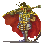
偉人たち仲間・ライバル
伊能忠敬・平賀源内・織田信長・坂本龍馬…。マイクリのヒーローたちが、物販仲間として出会いを重ね、スキルの「コツ」や特別な「奥義」を授けてくれる（第10章）。
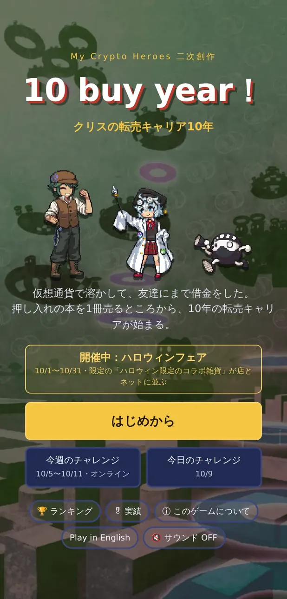
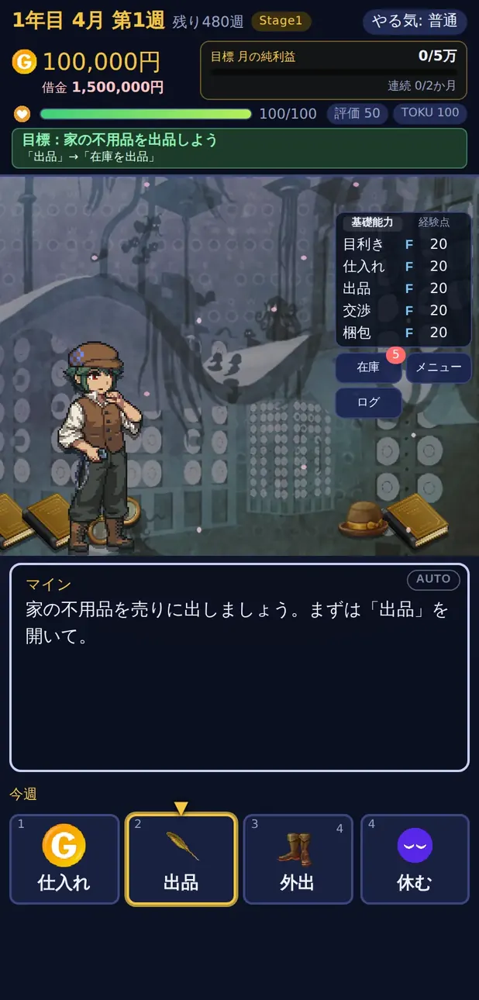
このゲームの数字は、ほとんどがゲームの中のデータからそのまま載せています。スキルツリーの全パネル、全エンディングの条件、全実績まで網羅しているので、困ったら目次から引いてね。
ゲームの基本：1週間の流れと画面の見方
1週間は「週のはじめ → 行動 → 夜 → 週末の販売」。月末に決算と返済。この繰り返しで10年が進む。
1週間の流れ
行動を1つ選ぶと、その場で仕入れや作業の画面が開き、終わると週末に進みます。売れたかどうかは週末にまとめて決まり、売上金は翌週に入金されます。月の最終週（第4週）の終わりには、月の締めと返済があります。
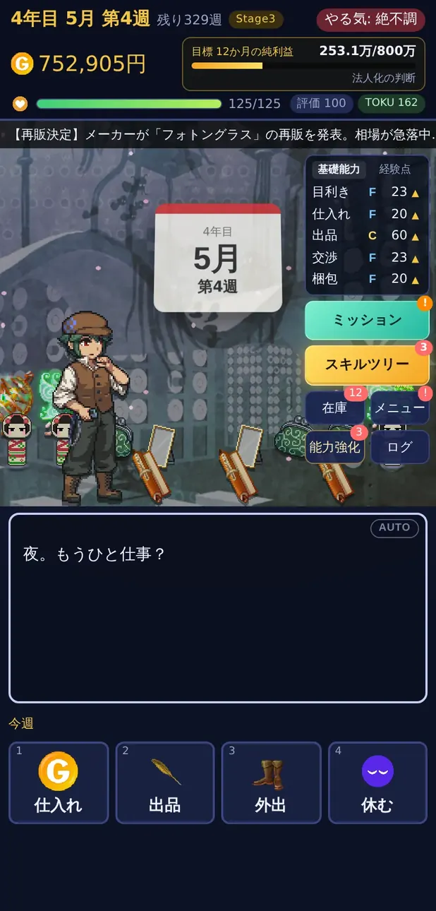
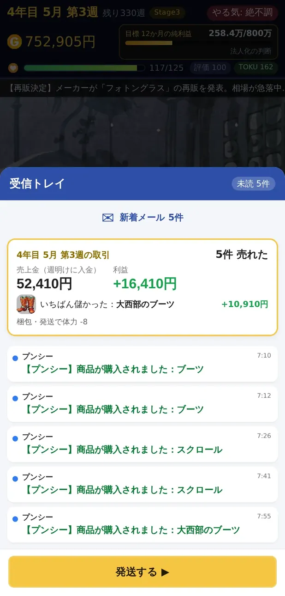
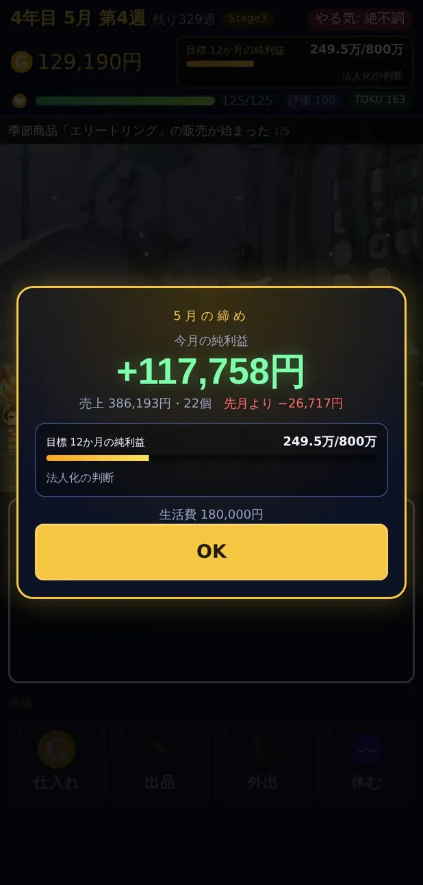
画面の見方（HUD）
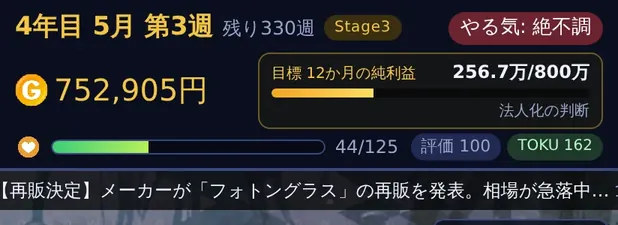
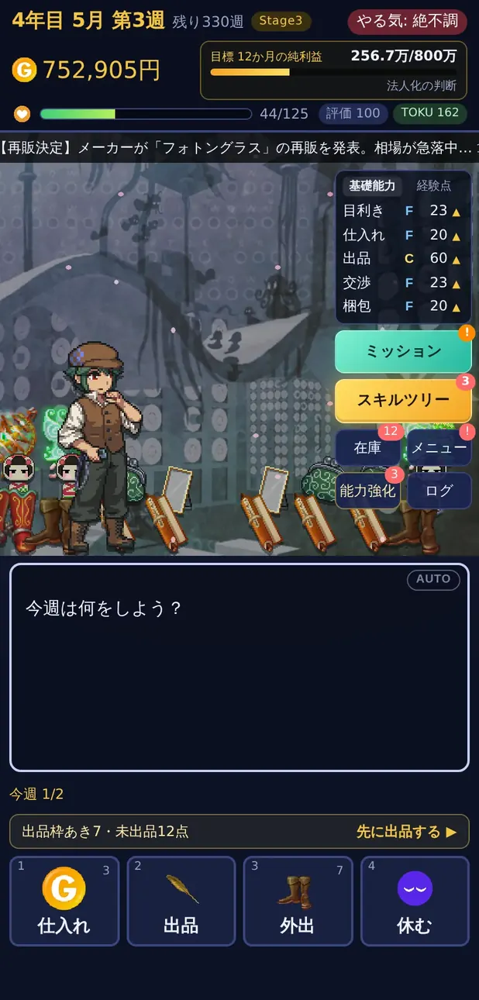
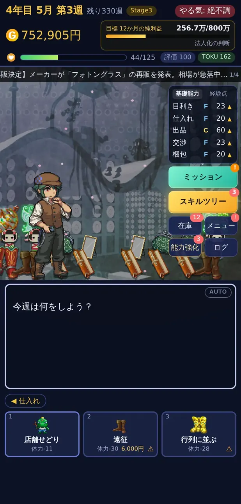
行動の選び方
行動カードは「仕入れ」「出品」「外出」「休む」の4分類。分類をタップすると中の行動が並び、1回目のタップで予告（体力・お金・増える経験点）、2回目で決定です。設定で「行動を1タップで決める」をONにすると1タップで決まり、長押しで予告だけ見られます。
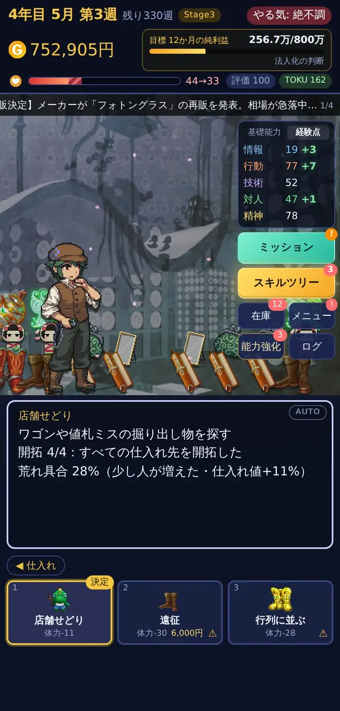
荷物のサイズ
商品にはS・M・Lのサイズがあり、送料・発送の体力・置き場のマス数が変わります。置き場は最初30マス。満杯を超えると休んだときの回復が半分になり、限界（置き場の1.5倍）を超えては仕入れられません。
| サイズ | 送料（目安） | 発送の体力 | 置き場 |
|---|---|---|---|
| S（小） | 210円 | 体力 2 | 1マス |
| M（中） | 750円 | 体力 3 | 2マス |
| L（大） | 1,600円 | 体力 6 | 4マス |
便利な操作
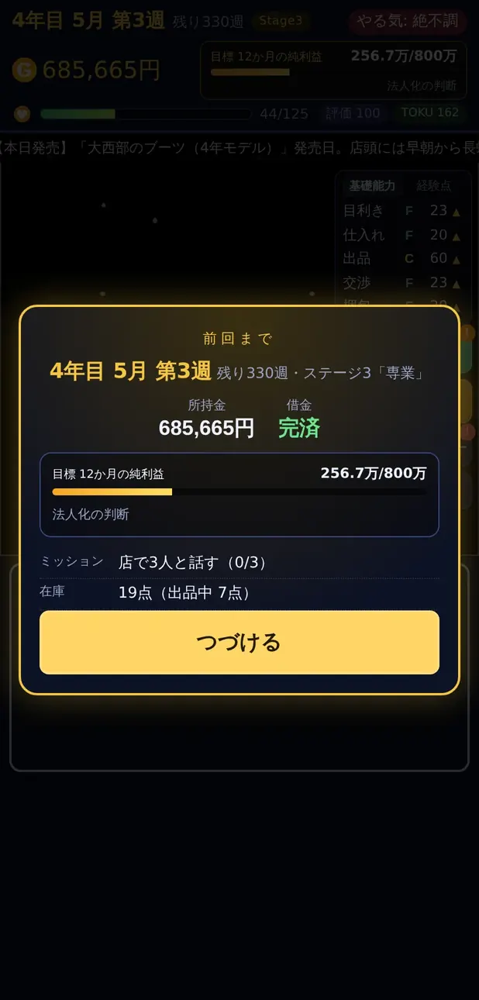
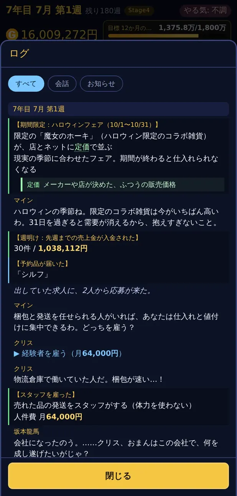
序盤の進め方：チュートリアルと最初の1年
難易度を選び、押し入れの本を売るところから。チュートリアルの9つのミッションで、仕入れ→出品→販売の流れをひと通り覚える。
難易度
はじめからを選ぶと、最初に難易度を選びます。始めたあとは変えられません。最初の資金はどれも現金10万円、カードの利用枠10万円です。
やさしい
借金 80万円
最低返済 月2万円・年利10%
まずは転売の流れを楽しみたい人にふつう おすすめ
借金 150万円
最低返済 月3万円・年利15%
はじめての人にきびしい
借金 250万円
最低返済 月4.5万円・年利15%
金利は法律の上限。序盤の資金繰りがきつい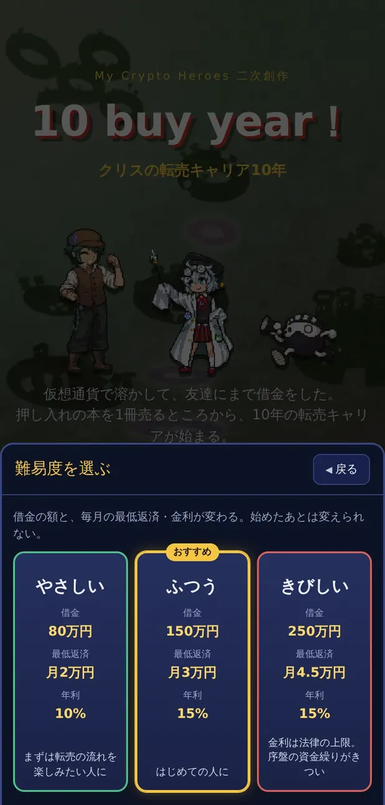
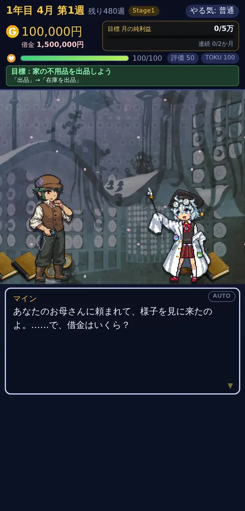
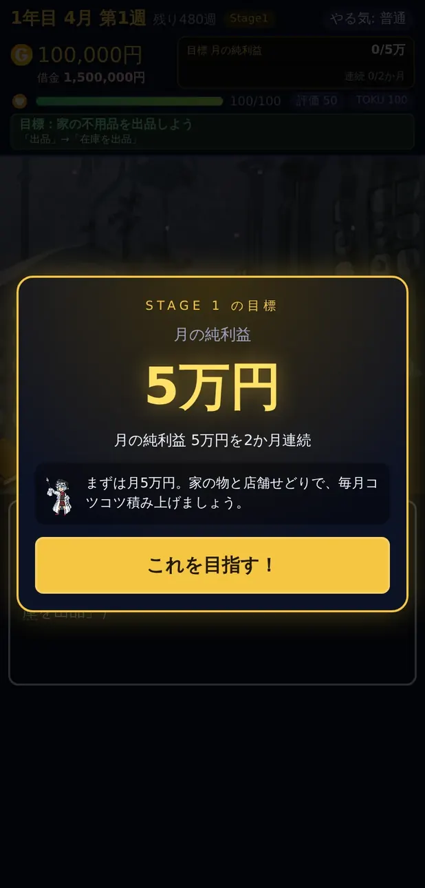
チュートリアルの9ミッション
マインの指示に従っていけば自然にクリアできます。チュートリアル中は値下げ交渉・取引トラブル・偉人との出会いが起きず、ニュースの帯も止まります。
最初に持っているノービスブック×3・ハット・グラスは仕入れ値0円。まずは全部出品して最初の売上を立てましょう。「スキルツリー」の中心「押し入れの宝の山」はコスト0で解放できるわ。
最初の1年の動き方
- 家の物を出品し、「家の中を探す」で残りを見つける（見つかる物は限られている）
- スキルツリーで「近所の店のワゴン」（行動10）を取って店舗せどりを開く
- 店舗せどりで「見立て（推定相場）＞値段」の品だけ買う。商品ページの帯の見込み利益を見る
- 体力が30を切ったら休む。月末の最低返済分の現金は必ず残す
- チュートリアルを終えると、販路の「ミィーム」（技術20・情報10）と経営の「利益計算」（情報10）が取れるようになる。利益計算は最優先
- 月の純利益5万円を2か月続けるとステージ2（副業安定）。夜の行動が増える
- 電脳せどり（累計5点仕入れ）・相場チェック（累計8点販売）・物販仲間（累計12点販売）が順に開く
- カード増枠を申請して仕入れの幅を広げる。ただし引き落としは月末
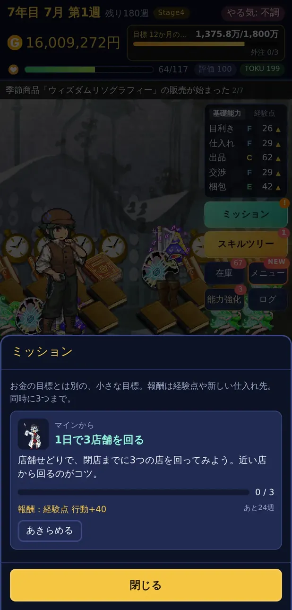
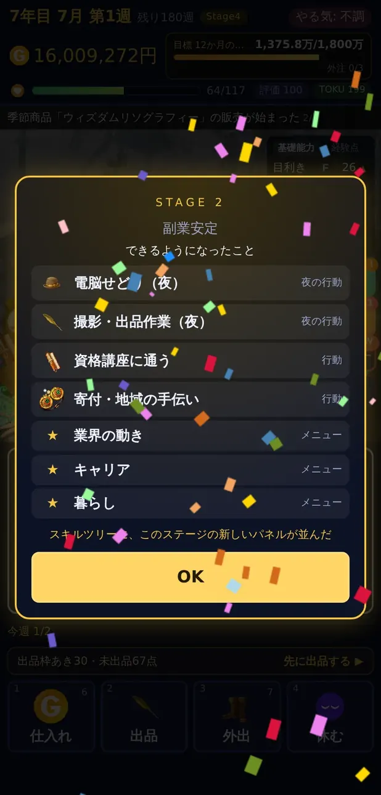
ミッション（全21種）
お金の目標とは別の小さな目標です。同時に3つまで、24週以内が目安。マインが告げるもの（ステージごと）と、店で「！」の人から頼まれるもの（偉人）があります。報酬はまとまった経験点か、新しい仕入れ先。
| ミッション | 内容 | 報酬 | 出る時期 |
|---|---|---|---|
| 1日で3店舗を回る | 店舗せどりで、閉店までに3つの店を回ってみよう。近い店から回るのがコツ。 | 行動 40 | ステージ1〜 |
| フリマで売れた値段を5回調べる | 仕入れ（店舗せどり・電脳せどり）で商品をタップし、商品ページの「売れた値段を調べる」タブのボタンを押そう。値札ではなく、実際に売れた値段で利益を見積もれる。（5回で達成） | 情報 40 | ステージ1〜 |
| 借金を10万円、繰上げ返済する | メニューの「経営」から、いつでも繰上げ返済できる。早く返すほど利息が減る。 | 精神 60 | ステージ1〜 |
| 10点を出品する | 在庫は寝かせても売れない。「在庫」から出品しよう。 | 技術 40 | ステージ1〜 |
| 電脳せどりで1点仕入れる | 仕入れの「電脳せどり」で夜のスマホを開き、通知や新着から安い出品を探して1点買おう。 | 情報 40 | ステージ1〜 |
| フリマで値下げ交渉を成功させる | 電脳せどり（夜のスマホ）で「プンシー」の出品をタップし、「交渉・売れた値段」タブの「コメントで値下げ交渉」でお願いしてみよう。大きく値切ると断られる。 | ステージ2〜 | |
| ネットオークションで落札する | 電脳せどり（夜のスマホ）で「ミィーム」の出品をタップし、「オークション」タブで上限額を決めて入札しよう。自動延長がなければ、終了間際の入札も効く。 | 技術 60 | ステージ2〜 |
| 1日で5店舗を回る | 地図・車・目利きで、店を回る時間を短くしよう。 | 新しい仕入れ先 | ステージ2〜 |
| 抽選に応募する | 発売前の限定品は、抽選で定価で買える。結果はメールで届く。 | 情報 50 | ステージ2〜 |
| 店で3人と話す | 店にいる人の頭に「！」が出ていたら、タップして話しかけてみよう。 | ステージ2〜 | |
| 仕入れ先と独占契約を結ぶ | メニューの「業界の動き」から、荒れてきた仕入れ先と独占契約を結べる。 | ステージ3〜 | |
| 取引方針を決める | メニューの「取引の対応（値下げ交渉・トラブル）」で、値下げ交渉やトラブルへのいつもの対応を1つ決めよう。 | 精神 80 | ステージ3〜 |
| 電脳せどりを15回する | 夜のスマホを続けていると、新しい仕入れ先が見つかる。 | 新しい仕入れ先 | ステージ3〜 |
| 仕入れ先に出資する | メニューの「業界の動き」で、開拓した仕入れ先に出資できる。品ぞろえが増えて配当も入る。 | 精神 50 | ステージ4〜 |
| コレクションを1点買う | メニューの「コレクション」。売るためじゃない、手元に置く1点。 | 情報 120 精神 80 | ステージ4〜 |
| 1日で6店舗を回る | 伊能忠敬「回れたら、わしの地図の写しをやろう」 | 新しい仕入れ先 | 店で頼まれる |
| フリマで売れた値段を10回調べる | エジソン「失敗ではない。うまくいかない値段を見つけただけだ」（仕入れ中の商品ページ「売れた値段を調べる」タブで調べる） | 技術 90 | 店で頼まれる |
| 在庫を20点売る | 石田三成「帳簿は、売ってこそ締まる」 | 情報 80 | 店で頼まれる |
| 店舗せどりを10回する | 織田信長「天下は足で取るものよ」 | 行動 120 | 店で頼まれる |
| オークションで2回落札する | マルコ・ポーロ「東方の品は、競りで手に入れるものだ」 | 新しい仕入れ先 | 店で頼まれる |
| 気晴らしで休む | ナイチンゲール「働きすぎは、数字にも出ますよ」 | 精神 70 | 店で頼まれる |
仕入れ：どこで、何を、いくらで買うか
店舗・電脳・抽選・行列・業者オークション・問屋・輸入・くじ。仕入れ先ごとのクセと、利益が出る品の見分け方。
行動の一覧（全30種）
体力は1回あたりの消費（緑は回復）、経験点はやる気「普通」のときの値です。解放条件の「」はスキルツリーのパネル名。
| 行動 | 分類 | 体力 | お金 | 経験点 | 夜 | 使えるようになる条件 | |
|---|---|---|---|---|---|---|---|
 | 家の中を探す 押し入れから売れそうな物を探す | 仕入れ | 5 | 情報 4 技術 3 | 最初から（家の物が残っている間） | ||
| 店舗せどり ワゴンや値札ミスの掘り出し物を探す | 仕入れ | 15 | 行動 12 情報 5 | 「近所の店のワゴン」 | |||
 | 遠征 隣の県まで足をのばす店舗せどり。交通費と体力はかかるが、朝から回れて、荒らされていない店で掘り出し物が多い（店舗せどり10回から） | 仕入れ | 30 | -6,000円 | 行動 18 情報 6 | 店舗せどり10回から | |
| 電脳せどり ポイント還元・予約・フリマの安値 | 仕入れ | 8 | 情報 13 技術 4 精神 2 | 夜OK | 「ポイント通販」 | ||
| 抽選に応募 限定品の抽選。結果は翌週 | 仕入れ | 5 | 情報 6 精神 6 | 夜OK | 「抽選・予約」 | ||
| 行列に並ぶ 発売日に始発で並ぶ | 仕入れ | 28 | 行動 15 精神 10 | 「行列に並ぶ」 | |||
| 業者オークション 古物商だけの市場。相場の5〜7割。開催は毎月第3週だけ | 仕入れ | 10 | 情報 10 | 「業者オークション」（ステージ3）・毎月第3週だけ | |||
| 問屋と商談 定番品をロットで卸値仕入れ | 仕入れ | 8 | 情報 6 | 「問屋・メーカー直取引」（ステージ4） | |||
| 中国輸入 海外の卸サイトからノーブランド品をロットで輸入。届くのは3週後（ステージ2から） | 仕入れ | 6 | 情報 8 技術 5 | ステージ2から・「ポイント通販」 | |||
| くじを引く 等級つきのキャラクターくじ（1回750円）。A賞とラストワン賞が狙い目、下位賞はダブつきやすい | 仕入れ | 3 | 精神 4 情報 2 | 「近所の店のワゴン」・くじの開催中（年4回） | |||
| 自社製品をつくる 工場に自社ブランドの品を発注する（最低30個・4週後に納品）。競合がいない自分だけの品 | 仕入れ | 6 | 技術 10 情報 6 | エジソンの奥義「メンロパークの研究所」 | |||
| 撮影・出品作業 今週の売れ行き1.25倍 | 出品 | 12 | 技術 14 情報 4 | 夜OK | 最初から | ||
| 物販交流会 せどり仲間と情報交換 | 外出 | 10 | -3,000円 | 情報 6 | 「物販仲間」 | ||
| 図書館で勉強 相場・法律・税金を学ぶ | 外出 | 4 | 情報 9 精神 7 技術 2 | 夜OK | 最初から | ||
| 日雇いバイト 倉庫で働いて確実に稼ぐ | 外出 | 25 | +22,000円 | 行動 4 精神 5 | 副業のあいだ（専業で消える） | ||
| 気晴らし やる気と体力が回復 | 外出 | +15 | -8,000円 | 精神 3 | 最初から | ||
| 休む 一日中寝る | 休む | +45 | 最初から | ||||
| 通院・治療 病院・整骨院でケガや体調不良を治す（治療費あり） | 外出 | +10 | 精神 2 | ケガ・体調不良のとき | |||
| 資格講座に通う 受講料を払って通い、資格を取る（ステージ2から） | 外出 | 12 | 行動 8 精神 10 情報 6 | ステージ2から | |||
| 店を開く 立地を選んで自分の店を開く（店舗経営講座の修了が必要） | 外出 | 10 | 情報 6 | 資格「店舗経営講座」（ステージ4） | |||
| 寄付・地域の手伝い 寄付や地域のイベントの手伝いで徳を積む（TOKUが上がる・ステージ2から） | 外出 | 8 | 精神 4 | ステージ2から | |||
| 百貨店で買い物 自分のための買い物。美術画廊でコレクションを集め、年間の購入額で外商のランクが上がる（ステージ3から） | 外出 | 6 | 精神 6 | ステージ3から | |||
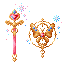 | ライブ配信 出品中の美容品を配信でまとめて売る（対人30） | 出品 | 10 | 技術 4 | 夜OK | キャリア「ライブコマースKOL」 | |
| 訪日客の買い物ツアー 出品していない和雑貨・工芸を相場の1.3倍で直接売る（対人20） | 出品 | 14 | 行動 6 | キャリア「インバウンド」 | |||
| 海外買い付け ファッションの品を卸値で買い付ける（技術25） | 仕入れ | 16 | 行動 6 情報 4 | キャリア「セレクトショップ」 | |||
| 鑑定の依頼 持ち込まれた品を鑑定して手数料を稼ぐ（情報20・精神10） | 外出 | 8 | 精神 4 | キャリア「鑑定士」 | |||
| レビュー記事を書く 読者を増やす。読者が多いほど毎月の紹介料（情報30） | 外出 | 8 | 技術 6 | 夜OK | キャリア「レビューメディア」 | ||
| 師匠に相談 前の周の転売屋に電話で相談する（12週に1回） | 外出 | 0 | 2周目以降・師匠がいるとき（12週に1回） | ||||
| カード増枠の申請 カード会社に利用枠の引き上げを申し込む。審査あり | 外出 | 3 | 精神 2 | 利用枠の次の段階があるとき（8週に1回） | |||
| 古物商許可を申請 警察署へ。許可まで約6週間 | 外出 | 8 | -19,000円 | 情報 5 精神 3 | 「古物商許可の取り方」 |
店舗せどり：閉店までに店を回る
昼12時に家を出て、閉店の20時までに回れるだけ店を回ります（夜の行動では18時半〜22時、遠征は朝8時出発）。次に行く店は2つから選び、店の中では売り場をタップして品定め。見つけた品は「カゴ」に入れて、レジで現金かカードで払います。
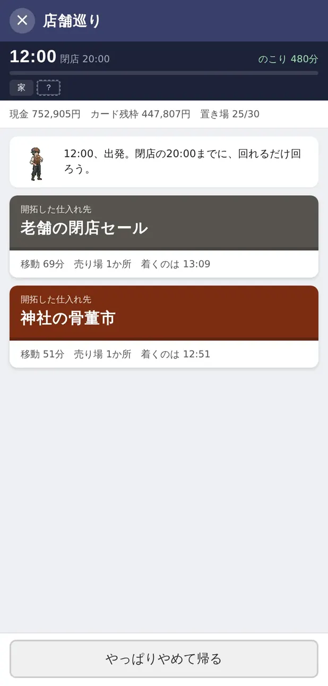
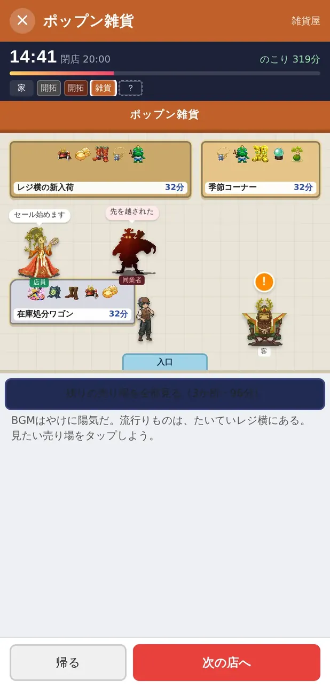
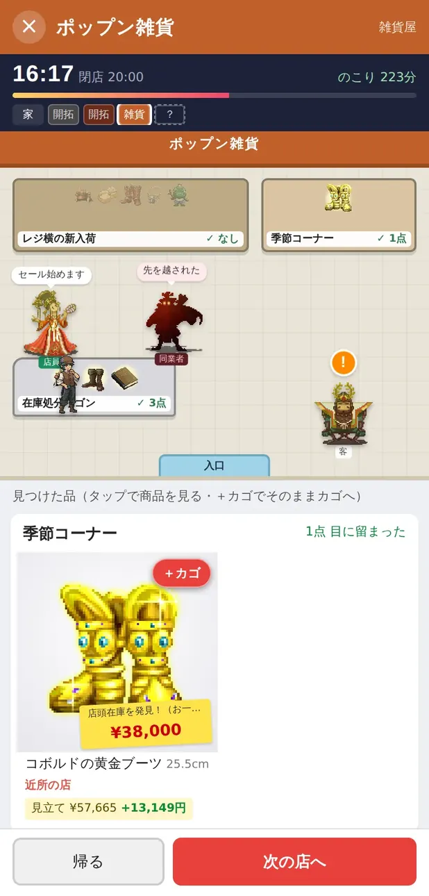
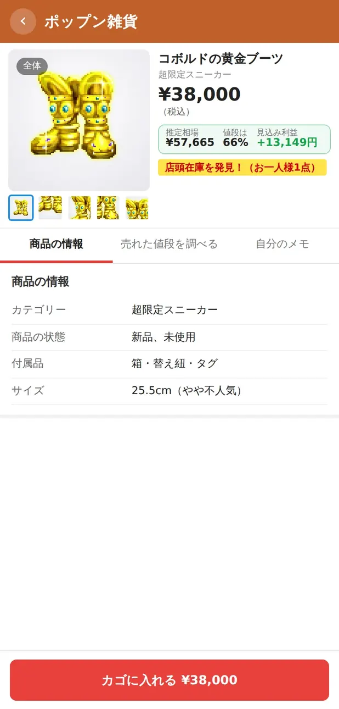
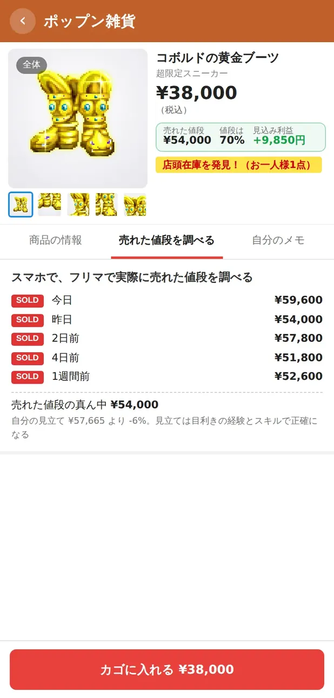
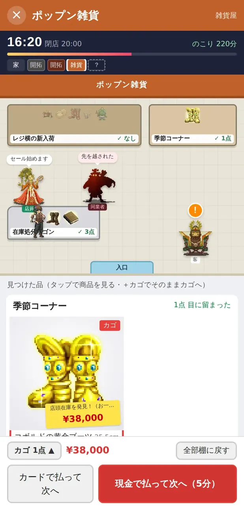
店のクセ（同じ店に3回通うと覚える）
店ごとに決まったクセがあり、覚える前から効いています。覚えると店を選ぶ画面と「店の地図」に表示され、ルートを組み立てやすくなります。
| クセ | 効果 |
|---|---|
| ワゴンが宝の山 | 品が集まりやすい |
| 棚の奥に旧品 | ここの品は5%安い |
| 同業者がよく来る | 品が残っていないことが多い |
| 店員が転売に厳しい | 1人2個まで |
| 駅から近い | 移動が3割短い |
| 値札の貼り替えが多い | セールのチラシが出やすい |
遠征
店舗せどりを10回したあとに開く行動。交通費6,000円と体力30を使いますが、朝から回れて荒らされていない店が多く、掘り出し物が増えます。遠征先は 湯けむり市・港町みなと・城下町ささやま・ニュータウン若葉。遠征先ごとに店のクセは別です。
判断の基本は見込み利益＝見立て −（手数料＋送料＋仕入れ値）。でも見立ては目利きの腕でぶれるわ。高い買い物の前は「売れた値段を調べる」で本当の相場を確かめて。
電脳せどり：夜のスマホ
21時から寝るまでの時間で、通販モール・フリマ・オークションのアプリを渡り歩きます。ポイント還元（第1・第3週は通販モールのポイントアップ週）、在庫復活の通知、フリマの安値、オークションの終了間際がねらい目。フリマではコメントで値下げ交渉、オークションは上限額を決めて入札します。
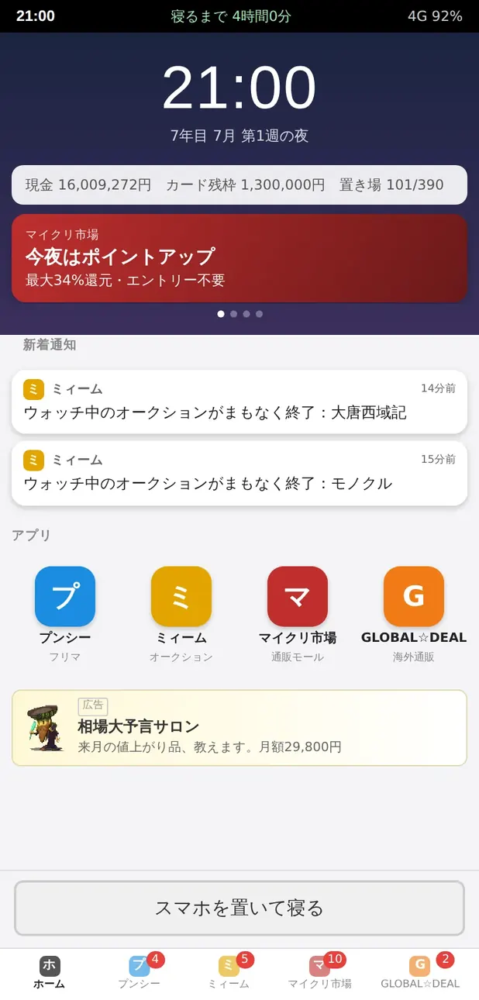
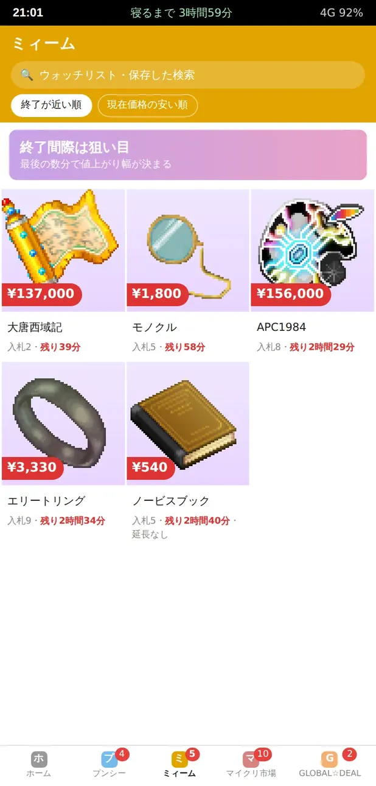
抽選・予約・行列：限定品を定価で
発売前の限定品は「抽選に応募」（結果は翌週）や電脳せどりの予約で定価で買えます。発売日には「行列に並ぶ」（体力28）。限定品は相場が定価を大きく上回る品薄の間がもうけどきですが、受注生産・公式リセール・転売禁止の対象拡大などの対策が入ると一気に値崩れします（第11章）。
業者オークション：月に一度の古物市場
ステージ3で「業者オークション」（会費 月1万円・目利き50以上）を取ると、毎月第3週だけ参加できます。開催週のはじめにクリスが「今週は業者オークションだ」とつぶやき、仕入れのカードに金色の札が付きます。会場ではまず競り（手を挙げ続けた人が落とす）、そのあと相場の5〜7割の出品物の一覧。真贋チェック済みが多く、偽物の心配が少ないのも魅力です。
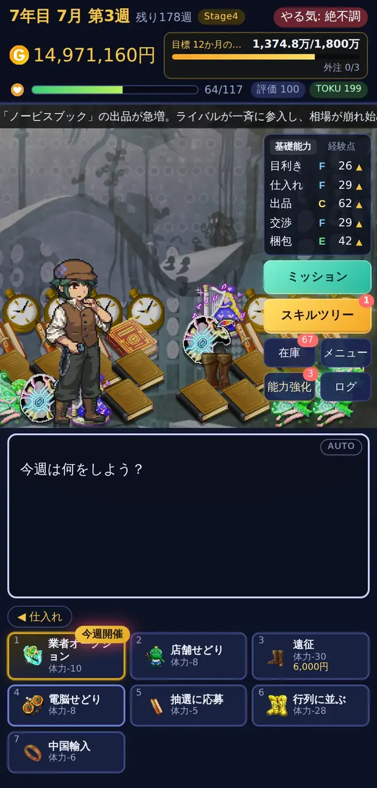
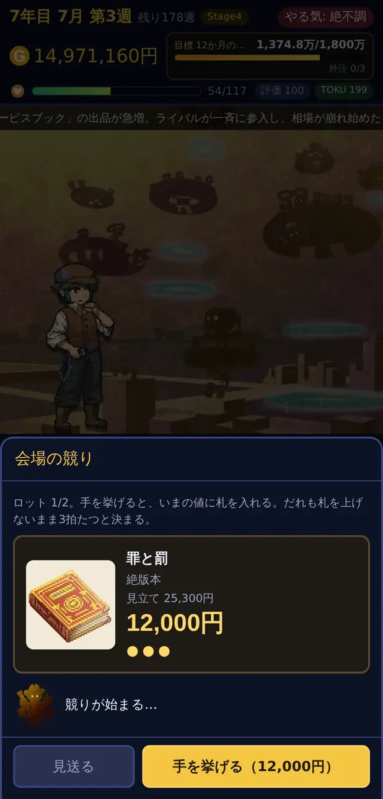
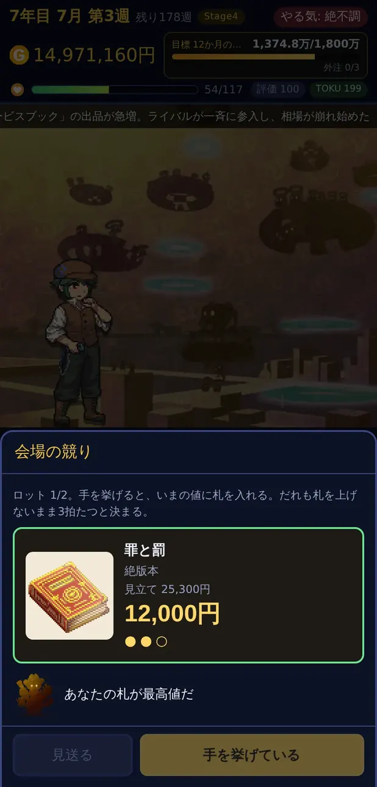
月に一度だから、第3週に向けて現金とカードの枠を空けておくのがコツよ。競りで落としたら、出品物の一覧からも狙いましょう。
問屋・中国輸入・くじ
問屋と商談
ステージ4〜。定番品を最低ロットで卸値（定価の6〜7割）仕入れ。見積書の掛け率とロットは交渉で動かせる。量をさばく販路（アマクリ・自分の店）と相性がよい。
中国輸入
ステージ2〜。ノーブランド品をロットで輸入。為替で仕入れ値が変わり（円安で高い）、届くのは3週後。税関で止まる・検品不良・関税（10%）などは届くまでわからない。
くじ
年4回、ホビーショップでくじが始まる（4週間）。1回750円。A賞とラストワン賞が狙い目、下位賞はダブついて売れ残りやすい。箱の残りは毎週ほかの客が引いて減っていく。
| 賞 | 本数（1箱80枚） | 定価 | |
|---|---|---|---|
| A賞 真夜中のスタールビー | 1本 | 18,000円 | |
| B賞 ピジョンブラッド | 2本 | 6,000円 | |
| C賞 ウィズダムルビー | 5本 | 2,500円 | |
| D賞 エリートルビー | 12本 | 1,200円 | |
| E賞 ルビー | 20本 | 700円 | |
| F賞 クラウン | 40本 | 400円 | |
| ラストワン賞 冕冠 | 最後の1枚 | 15,000円 |
新しい仕入れ先の開拓
同じ仕入れルートを回り続けると、新しい仕入れ先が見つかります。そこでしか出会えない品が並び、仕入れ先ごとに荒れ具合が別なので、古いルートが荒れたら移るのが中盤以降の基本です。開拓した仕入れ先には出資（品ぞろえが増え、荒れにくくなり、毎月配当）もできます。
| 仕入れ先 | ルート | 見つかる回数 | 並ぶ品 | 仕入れ値 | 条件 | |
|---|---|---|---|---|---|---|
| 温泉街のおもちゃ屋 店舗を回っているうちに、温泉街の古いおもちゃ屋を見つけた。店の奥にこけしがずらり…！ | 店舗せどり | 8回目 | こけし | 相場の60〜77% | ||
| 問屋街の工房 問屋街の裏通りで、がま口を手作りしている工房と知り合った。「まとめてなら安くするよ」 | 店舗せどり | 20回目 | がま口財布 | 相場の65〜80% | ||
| 神社の骨董市 毎月第一日曜の骨董市。顔なじみの露店主が「いい人形が入ったよ」と声をかけてきた。 | 店舗せどり | 40回目 | 市松人形 | 相場の55〜74% | ステージ2〜 | |
| 老舗の閉店セール 通い続けた商店街の老舗が店を閉めるらしい。店主が「あんたになら」と在庫を見せてくれた。 | 店舗せどり | 70回目 | 番傘 | 相場の50〜67% | ステージ2〜 | |
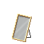 | 海外の雑貨サイト ネットを巡回していたら、日本未上陸のコスメ雑貨を扱う海外サイトを見つけた。 | 電脳せどり | 8回目 | エリート鏡 | 相場の65〜82% | |
| 限定コスメの会員ストア コスメブランドの会員ストアに登録できた。限定品の先行販売に参加できる。 | 電脳せどり | 20回目 | 女優鏡 | 相場の85〜97% | ||
| 海外オークション 英語の説明文にも慣れてきた。海外のオークションサイトで入札できるようになった。 | 電脳せどり | 40回目 | 怪盗紳士の片眼鏡 | 相場の55〜74% | ステージ2〜 | |
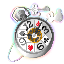 | 会員制の時計サイト 取引実績が認められて、会員制の時計サイトから招待状が届いた。 | 電脳せどり | 70回目 | 白兎の魔法時計 | 相場の65〜82% | ステージ3〜 |
| 地方の古物市場 業者オークションの常連に誘われて、地方の古物市場にも出入りするようになった。 | 業者オークション | 6回目 | 舞扇 | 相場の60〜77% | ||
| 遺品整理業者 市場で知り合った遺品整理業者から「査定を手伝ってくれないか」と声がかかった。 | 業者オークション | 16回目 | 幸若舞の盃 | 相場の50〜67% | ||
| メーカー直営の倉庫 問屋の担当者の紹介で、メーカー直営の倉庫のB品を卸してもらえることになった。 | 問屋 | 6回目 | 紳士用傘 | 相場の65〜74% | ||
| 輸入代理店 取引量が増えて、輸入代理店と直接の取引口座を開けた。 | 問屋 | 16回目 | 合皮財布 | 相場の70〜78% |
荒れ具合（飽和度）と独占契約
仕入れ先は使うほど荒れて（1回+2.5、夜は半分）、掘り出し物が減り仕入れ値が上がります。使わなければ週ごとに落ち着きます（使った週-2.5、使わなかった週-4）。週1回のペースなら荒れません。ライバル転売屋に荒らされたら、メニュー「業界の動き」で独占契約（24週・対人120と現金）を結ぶと、ライバルが入れなくなります。
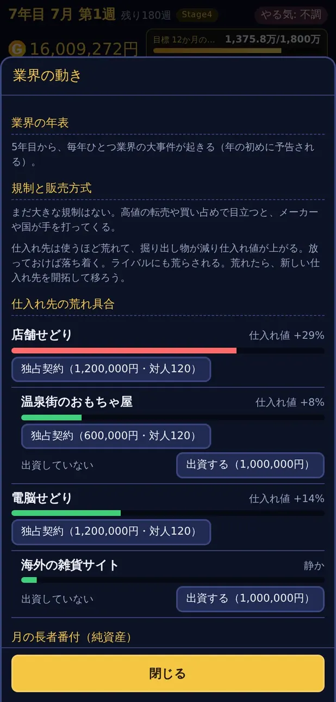
偽物の見分け方
偽物かどうかは画面に直接は書かれません。仕入れルート・価格（安すぎないか）・出品者・写真・説明文・付属品・質問への対応、そして実物の細部（刻印・縫製・シュリンクなど）で見抜きます。見られる細部の数と見誤りにくさは目利きで決まり、「真贋の知識」「鑑定士」、ダ・ビンチの奥義、商材特化などで増えます。偽物は売れても返品されたり、評価を大きく落とします。
出所の言えない品（石川五右衛門の卸）は、相場の2割でも絶対に買わないこと。盗品は2週後に警察が来て没収、違法行為の前歴が付きます。前歴があるのにもう一度買うと…御用ENDです。
販売：どこで、いくらで売るか
販路ごとの手数料と客層、値付けと売れる確率、在庫の管理、発送、値下げ交渉とトラブル。
販路（売り先）
| 販路 | 手数料 | 特徴 | 使えるようになる条件 |
|---|---|---|---|
| プンシー | 10% | フリマ。手数料10%。値付け次第ですぐ売れるが、値下げ交渉とトラブルが多い | 「プンシー」（最初から） |
| ミィーム | 10% | オークション。手数料10%。1週間で落札。コレクター品は競り上がりやすいが、入札ゼロもある | 「ミィーム」 |
| アマクリ | 15% ＋300円/個 | 大手EC・倉庫委託。手数料15%＋納品料300円/個。新品だけ出品でき、買い手が多く発送の手間がない | 「アマクリ」 |
| 海外EC | 13% | 海外のECサイト。手数料13%、送料3倍。為替で売値が変わり、円安の週は高く売れる。国内で値崩れした品（型落ち・シーズン後・ブームの後）も、海の向こうでは定価近くで売れる | 資格「輸出入の基礎」 |
| ホンモノ堂 | 20% | スニーカー・トレカの専門マーケット。手数料20%。品物はいったん鑑定センターを通るので、すり替えや偽物騒ぎが起きず、買い手は安心料として相場の1割増しで買う。偽物は鑑定ではじかれて戻ってくる | ステージ2から |
| 裏市場 | 20% | 裏のサービス。仲介料20%。表の数倍の値で売れるが、表の人間には使えない | 裏の人間のみ |
新品の量産品はアマクリ（発送の手間なし）、コレクター品はミィーム（競り上がる）、スニーカー・トレカはホンモノ堂（相場の1割増し）、型落ちやブームの後は海外EC。販路を1つに頼ると、手数料の改定で痛い目を見るわ。
売れる仕組み
毎週末、販路ごとに買い手の人数が決まり、安い出品から順に「買うかどうか」が判定されます。1人の買い手が買う確率は、値付けが相場の何倍かで決まります。相場どおり（×1.0）ならかなり売れ、×1.2を超えると急に売れにくくなります。買い手の人数は、評価・季節（12月は1.25倍）・顧客層・スキル・その週の「撮影・出品作業」で増えます。
在庫と出品
右の「在庫」から、売り先のタブを選び、品ごとに値付けと個数を決めて出品します。品が8つ以上あると1行1品のコンパクト表示になり、絞り込み（未出品・出品中・90日以上）と並べ替え（見込み利益・在庫日数・割高な出品）が使えます。上の「ワンタップ」ボタンで、未出品を相場でまとめて出品・出品中を5%値下げ・90日以上の在庫を即決買取ができます。
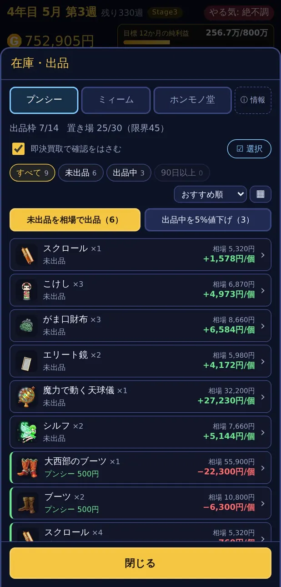
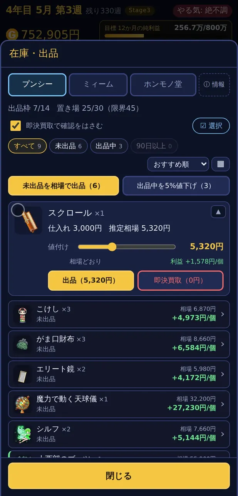
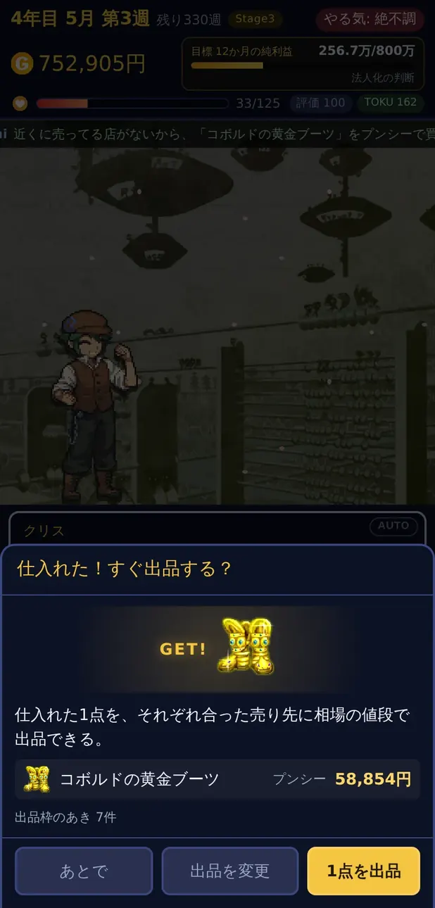
出品枠
同時に出品できる数。5＋出品÷10（初期7件）。「出品枠の拡張」（+3×5回）、「プンシーShops」（+5）で増える。
即決買取
買取業者にすぐ売る。受け取りは相場の45%。損切りと現金づくり用。偽物・盗品・医薬品は値がつかない。
撮影・出品作業
行動「撮影・出品作業」で、その週の売れ行きが最大1.34倍。背景・光・枚数を選ぶ（白い背景＋リングライト＋多めの枚数が強い。撮りすぎると疲れる）。
長期在庫
60日・90日を超えた在庫はレポートで知らせが来る。相場は動くので、寝かせても上がるとは限らない（家康の奥義「鳴くまで待とう」は例外）。
発送
週末に売れた品は、部屋から箱に詰めて送り出します（演出）。体力を使い、足りないと発送が遅れて評価が下がります。アマクリは倉庫から出荷されるので体力不要。「梱包職人」で半分、外注・スタッフでゼロにできます。
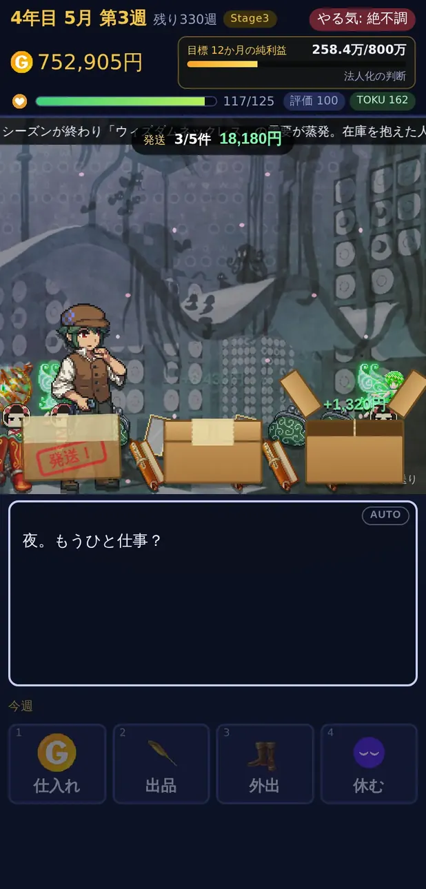
値下げ交渉と取引トラブル
プンシーでは値下げ交渉がよく来ます。取引トラブルは9種類。「すり替え疑惑」と「クレーム」は交渉バトルになり、上の円ゲージ（交渉成功率）が能力・スキルで最初から貯まった状態で始まります。選択肢ごとに成功率が表示され、スキル（シリアル控え・このはし渡るべからず など）が発動するとゲージが上がります。
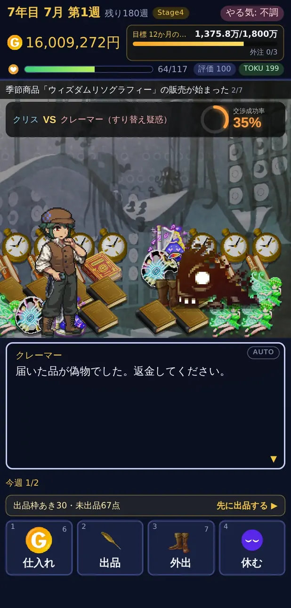
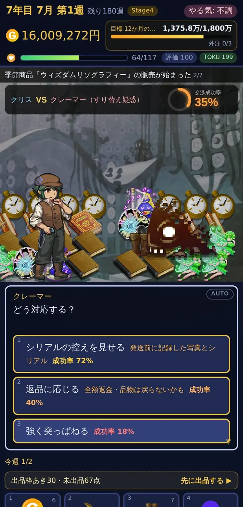
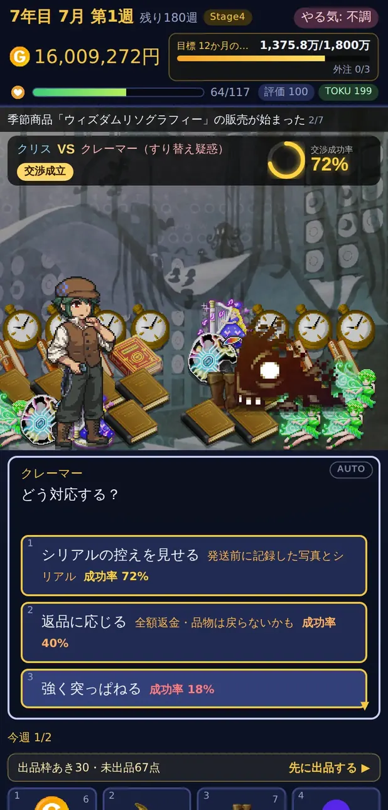
| トラブル | 内容 |
|---|---|
| 音信不通 | 購入後に連絡が取れない。待つかキャンセルか |
| すり替え疑惑 | 「届いた品が偽物」と言われ、本物とすり替えて返品される詐欺。交渉バトル。「シリアル控え」で撃退できる |
| クレーム | 理不尽な要求。交渉バトル。対応しだいで評価が上下する |
| 返品の要求 | イメージと違う等。応じるか断るか |
| サイズ違いの返品 | スニーカーなど。サイズの合わない品の返品 |
| 低評価 | 評価が下がる。丁寧な対応で取り返せることも |
| いたずら購入 | 買ったまま放置。キャンセルで出品し直し |
| 配送破損 | 梱包が甘いと起きる（梱包の能力・梱包職人で減る） |
| 偽物の申告 | 仕入れた品が偽物だった場合など |
メニューの「取引の対応」で、値下げ交渉やトラブルにいつもの答えを決めておけるわ。初期設定ではルーティン中だけ自動で答える。トラブルを減らすなら「プロフ必読」（-30%）と交渉の能力ね。
売り方に注意がいる品
| 種類 | 法律 | ルール | |
|---|---|---|---|
| 医薬品 | 薬機法 | 医薬品の販売には「医薬品販売業」の許可が必要。個人はフリマにもオークションにも出品できない | 出品できない |
| 高度管理医療機器 | 薬機法 | カラーコンタクトは「高度管理医療機器」。販売には都道府県知事の許可が必要で、個人は出品できない | 出品できない |
| 効能をうたえない商品 | 薬機法 | 化粧品・サプリは出品できるが、「シミが消える」「やせる」など効能をうたうと違反（誇大広告） | 出品できる |
化粧品・サプリの説明文で効能をうたうと、買い手は×1.3になりますが、毎週20%で削除と警告。警告2回で出品停止です。お酒は資格「酒類販売業免許」がないと続けて出品できません。
ジャンク品
リサイクルショップのジャンクかごにある「動作未確認」の電子機器。買って動作確認（体力3）するまで状態がわかりません。直せそうなら修理もできます。
| 状態 | 売れる値段 |
|---|---|
| 動いた | 相場の85% |
| 故障（直せそう） | 相場の25% |
| 完全に壊れている（部品取り） | 相場の8% |
お金：借金・カード・税金・経営の数字
最低返済を欠かさないこと。カードは翌月以降に引き落とし。確定申告は2月。そして数字を読めば、伸ばすべきところが見える。
借金と返済
毎月の第4週末に、利息（年利÷12）が借金に乗り、最低返済額が現金から引かれます。現金が足りないと滞納（遅延損害金5,000円・やる気ダウン）。3か月連続で滞納すると債務整理END（ゲームオーバー）です。一度でも払えれば連続滞納はリセットされます。
メニュー「経営」からいつでも繰上げ返済ができ、早く返すほど利息が減ります。「全額返済」「手持ちの50%」のワンタップボタンと、金額を決めて返す欄があります。全額返すと滞納の記録も消えます。
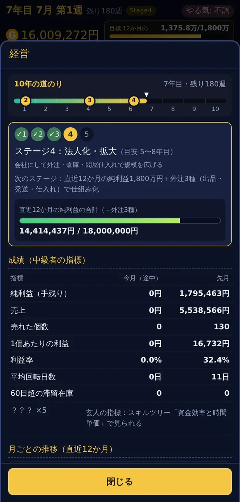
月末の返済日はHUDに「今週末は返済日！」と赤い帯が出ます。仕入れに使いすぎて最低返済額を割らないように。3か月連続の滞納は即終了よ。
マイクリカード
仕入れはカードでも払えます。締め日は月の第3週の終わり。第1〜3週の利用分は翌月末、月の最終週の利用分は翌々月末に口座から引き落とされます（どの利用も引き落としまで最低5週）。請求のお知らせメールは引き落としの2週前に届きます。残高が足りないと不足分はリボ払いになり、手数料3%とともに借金に上乗せされます（石田三成の奥義「大一大万大吉」でリボにならない）。カード払いには1%（ポイ活の鬼で2%）のポイントが付きます。
利用枠は外出「カード増枠の申請」で上げます（審査あり・8週に1回）。
| 段階 | 利用枠 | 審査の目安 | ステージ |
|---|---|---|---|
| 最初 | 100,000円 | — | |
| 1段目 | 300,000円 | 直近3か月の平均売上 50,000円 | |
| 2段目 | 500,000円 | 直近3か月の平均売上 200,000円 | |
| 3段目 | 1,000,000円 | 直近3か月の平均売上 500,000円 | ステージ2〜 |
| 4段目 | 3,000,000円 | 直近3か月の平均売上 1,500,000円 | ステージ3〜 |
| 5段目 | 5,000,000円 | 直近3か月の平均売上 3,000,000円 | ステージ4〜 |
固定費・生活費・暮らし
- スキルツリーのツール・倉庫・外注には月額がかかる（ノードの説明に記載）。仕組み化ルートの熟練度・物流センターで安くなる
- 専業（ステージ3）になると毎月生活費 180,000円（フランクリンの奥義で2割引き）
- 法人化（ステージ4）すると設立費 250,000円、毎月の社会保険 60,000円
- 暮らしを上げると毎月の出費が積み上がる（第9章）
税金（確定申告）
毎年2月第3週に、その年度（4月〜）の事業所得で確定申告があります。個人は所得税＋住民税の累進（基礎控除58万円）、法人は実効税率25%＋均等割7万円（ゲーム用の簡略化）。「申告しない」も選べますが、税務署はフリマの売上データを見ています。「資金繰り表」「節税の知恵」「経営者の眼」「簿記3級」、三成の奥義（-30%）で税額が下がります。
経営の数字（KPI）
経営画面の「成績」に出る指標は、スキルツリーの経営ルートで増えていきます。月ごとの純利益のグラフと、在庫を持っている日数の分布も見られます。
| 段階 | 指標 | 意味 |
|---|---|---|
| 素人 | 純利益（手残り） | 売上 − 仕入れ値 − 手数料 − 送料 − 経費 |
| 素人 | 売上 | 売れた金額の合計 |
| 素人 | 売れた個数 | |
| 素人 | 1個あたりの利益 | |
| 中級 | 利益率 | 純利益 ÷ 売上。新品で10〜20%、中古で20〜40%が目安 |
| 中級 | 平均回転日数 | 仕入れてから売れるまで。30〜90日以内が理想 |
| 中級 | 60日超の滞留在庫 | |
| 玄人 | 資金効率（ROI） | 純利益 ÷ 在庫に寝ている資金 |
| 玄人 | 時間単価 | 純利益 ÷ 作業時間 |
| 玄人 | 90日超在庫の比率 | 在庫金額のうち90日以上売れていない割合 |
| 玄人 | 損切り率 | |
| 玄人 | 返品・キャンセル率 |
成長：経験点と基礎能力
行動で5種類の経験点を貯め、基礎能力（目利き・仕入れ・出品・交渉・梱包）とスキルツリーに使う。
5種類の経験点
行動ごとに決まった経験点が入り、やる気で倍率がかかります（絶不調×0.6〜絶好調×1.4）。「学びの習慣」「決算の勘」「経営者の眼」などで獲得量が増えます。余った経験点は能力画面の「経験点の振り替え」で、別の種類に半分の値（×0.5）で移せます。
基礎能力
能力は0〜100（初期20）。ランクは S（90〜）・A（80〜）・B（70〜）・C（60〜）・D（50〜）・E（40〜）・F（20〜）・G（0〜）。能力の画面で+1 / +5 と上げるほか、下の「自動で割り振る」で、いまの経験点で上げられるだけ低い能力から順に上げられます。スキルツリーの「目利きの修行」など繰り返しパネルでも+3ずつ上がります。
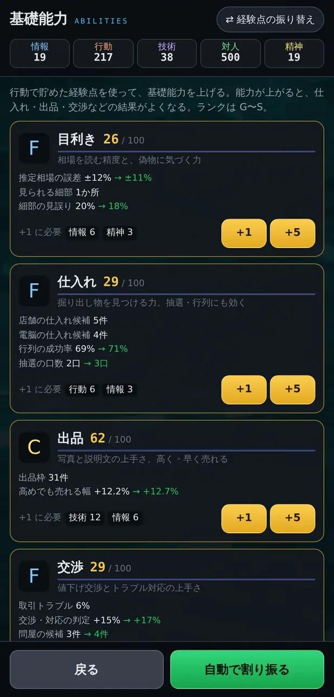
能力ごとの効果（値ごと）
| 能力 | 効果 | 20 | 40 | 60 | 80 | 100 |
|---|---|---|---|---|---|---|
| 目利き 相場を読む精度と、偽物に気づく力 | 推定相場の誤差 | ±26% | ±21% | ±15% | ±10% | ±4% |
| 見られる細部 | 0か所 | 1か所 | 2か所 | 3か所 | 4か所 | |
| 細部の見誤り | 22% | 14% | 6% | 3% | 3% | |
| 仕入れ 掘り出し物を見つける力。抽選・行列にも効く | 店舗の仕入れ候補 | 4件 | 5件 | 6件 | 7件 | 8件 |
| 電脳の仕入れ候補 | 4件 | 5件 | 5件 | 6件 | 6件 | |
| 行列の成功率 | 43% | 51% | 59% | 67% | 75% | |
| 抽選の口数 | 2口 | 3口 | 4口 | 4口 | 5口 | |
| 出品 写真と説明文の上手さ。高く・早く売れる | 出品枠 | 7件 | 9件 | 11件 | 13件 | 15件 |
| 高めでも売れる幅 | +8.0% | +10.0% | +12.0% | +14.0% | +16.0% | |
| 交渉 値下げ交渉とトラブル対応の上手さ | 取引トラブル | 6% | 6% | 5% | 5% | 4% |
| 交渉・対応の判定 | +10% | +20% | +30% | +40% | +50% | |
| 問屋の候補 | 3件 | 4件 | 5件 | 5件 | 6件 | |
| 梱包 梱包・発送の手際。体力消費と破損が減る | 発送の体力 | -10% | -20% | -30% | -40% | -50% |
| 配送の破損 | 3% | 2% | 2% | 1% | 0% |
+1 に必要な経験点
10ごとに1.5ずつ高くなります。
| 能力値 | 目利き | 仕入れ | 出品 | 交渉 | 梱包 |
|---|---|---|---|---|---|
| 20→21 | 情報 6 精神 3 | 行動 6 情報 3 | 技術 6 情報 3 | 精神 3 | 行動 6 技術 3 |
| 40→41 | 情報 9 精神 5 | 行動 9 情報 5 | 技術 9 情報 5 | 精神 5 | 行動 9 技術 5 |
| 60→61 | 情報 12 精神 6 | 行動 12 情報 6 | 技術 12 情報 6 | 精神 6 | 行動 12 技術 6 |
| 80→81 | 情報 15 精神 8 | 行動 15 情報 8 | 技術 15 情報 8 | 精神 8 | 行動 15 技術 8 |
| 90→91 | 情報 17 精神 9 | 行動 17 情報 9 | 技術 17 情報 9 | 精神 9 | 行動 17 技術 9 |
序盤は目利き（見立てのぶれが減る）と出品（出品枠と高めでも売れる幅）が効くわ。スキルツリーの上位パネルには「目利き50以上」「出品50以上」などの条件があるから、ルートに合わせて伸ばして。
スキルツリー全貌：9つのルート・全パネル
中心「押し入れの宝の山」から9つのルートが放射状に伸びる。全90パネルの効果・コスト・解放条件。
スキルツリーは、経験点を払ってパネルを解放する成長システムです。どの方向に伸ばしたかで称号（そのルートのパネルを4枚以上）と得意分野が決まります。
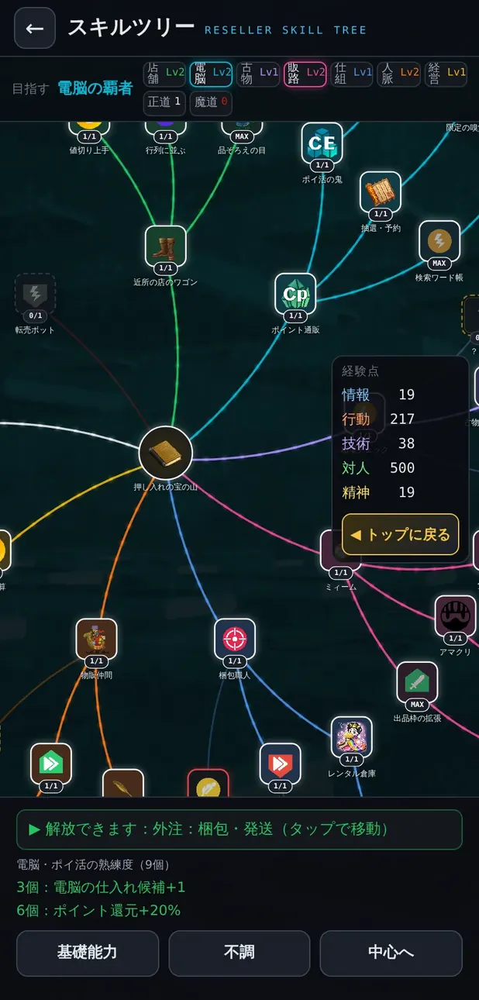
ルールのまとめ
見え方
親パネルを持っていると子パネルが見える。条件を満たした親の先は「？」で存在だけわかる。
ルート熟練度
同じルートのパネルを3枚・6枚持つと熟練Lv1・Lv2のボーナス（入門パネルは数えない。強化パネルは1回でも取れば1枚）。
専門外コスト
パネルを4枚以上持ったら、上位2ルート以外のパネルはコスト×1.25（入門・記録は対象外）。あれもこれもは高くつく。
到達点（キャップストーン）
そのルートのパネルを5個そろえ、能力条件を満たすと解放。強力で、2周目以降に1つ引き継げる。
偉人の奥義（金のパネル）
偉人のイベントでコツを教わると解放できる。コツのLvが上がるほど安くなる（最大60%引き）。
記録パネル（丸）
累計の記録（店舗せどりの回数・獲得ポイントなど）が目標に届くと無料で解放できる。
強化（くり返し）
同じパネルを最大回数まで何度も取れる。2回目以降はコストが2倍・3倍…と上がる。
正道と魔道
正道はTOKUが高いと、魔道はTOKUが80未満で取れる。魔道は取るたびにTOKUが15下がる（到達点は-100）。
ルート別：全パネル
店舗せどり — 極めると称号「店舗の鬼」
足で稼ぐ。ワゴン、行列、店ごとのクセ
「店舗せどり」が解放。量販店やドラッグストアの値引き品を仕入れる
店舗仕入れの価格がさらに5%安くなる
「行列に並ぶ」が解放。発売日・再販日に早朝から並ぶ
店舗せどりで見つかる商品が+1（レベルごと）
店舗仕入れの候補+2、店舗巡りの移動時間と体力消費-30%
行列の成功率が大きく上がる
体力の上限+5（レベルごと）
店舗の仕入れ候補+2、ワゴンの値引き+5%、店舗巡りの体力消費-20%
店舗せどりの体力消費-10%
電脳・ポイ活 — 極めると称号「電脳の覇者」
ネットとポイントで利益を作る。予約と抽選
「電脳せどり」が解放。ポイント還元を利益に変える
電脳のポイント還元+40%、カード還元が2%に
「抽選に応募」と、電脳せどりでの予約・在庫復活が解放
電脳せどりで見つかる商品が+1（レベルごと）
在庫切れ商品の逆引きなど。仕入れ候補+2、推定誤差-30%、店の棚を見る時間-40%（月額9,800円）
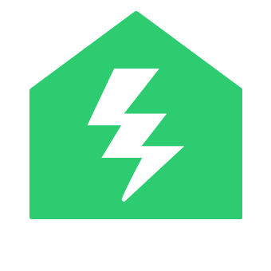
抽選の当選率が1.3倍
基礎能力「仕入れ」+3（レベルごと）
仕入れ候補を買える数+1（レベルごと。限定品・一点物を除く）

電脳の仕入れ候補+2、ポイント還元+30%、抽選の当選率1.2倍
ポイント還元+10%
古物・目利き — 極めると称号「鑑定士」
中古・ヴィンテージ・真贋。相場を読む目
「相場」画面が解放。フリマで実際に売れた値段を調べる習慣で、推定相場の誤差が25%減る
相場推定の誤差が半分に。ブームの天井を察知できる
「古物商許可を申請」が解放。中古を仕入れて売るなら必須
刻印・縫製・シュリンクなどの細部をもう1か所見られて、見誤りにくくなる
基礎能力「目利き」+3（レベルごと）
店舗せどりで中古品・古本が仕入れられる（古物商許可が必要）
発送前に写真とシリアルを記録。すり替え詐欺を撃退できる
電脳せどりで、フリマの相場より安い出品を仕入れられる（電脳せどりが必要）
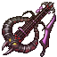
「業者オークション」が解放。古物商だけが入れる市場。真贋リスクが低い（会費 月1万円）
推定相場の誤差-10%
推定相場の誤差-5%（レベルごと）
鑑定眼：仕入れ候補の真贋が「目利き×1%」の確率でひと目で分かる（最大95%）。中古・業者オークションの仕入れ値-8%
販路・出品 — 極めると称号「売れっ子セラー」
売り先を増やし、高く早く売る

オークション。手数料10%。コレクター品は競り上がりやすい
少し高めの値付けでも売れやすくなる
大手EC・倉庫委託。手数料15%＋納品料。新品がよく売れ、発送の手間がない（月額4,900円）
同時に出品できる数が+3（レベルごと）
コピー一発で売れ行きが激変。高値でも売れやすい
事業者向けショップに移行。プンシーの買い手1.3倍、出品枠+5
基礎能力「出品」+3（レベルごと）
すべての販路で買い手+5%（レベルごと）
高めの値付けでもさらに売れやすく、すべての販路で買い手+20%
すべての販路で買い手+10%
仕組み化 — 極めると称号「物販会社」
ツール・倉庫・外注。自分が動かなくても回る
発送の体力消費が半分になり、配送破損がなくなる
在庫スペース+60（月額2万円）
売れ残った出品を毎週自動で値下げ・相場に追従させる（月額5,000円）
「ルーティン」が解放。仕入れ→出品→売却→値下げのサイクルを、決めたルールで何週も回す
在庫スペース+300（月額8万円）
発送の体力消費がゼロに（1件400円）
基礎能力「梱包」+3（レベルごと）
「問屋と商談」が解放。定番品をまとめて卸値で仕入れる
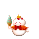
仕入れた商品を毎週自動で相場価格で出品（月額4万円）
発送の体力消費-15%
店舗を構えて買い取る側へ。毎月、在庫規模に応じた利益
仕入れ候補から利益率15%以上のものを自動で仕入れる（月額12万円）
在庫スペース+10（レベルごと）
ツール・外注・倉庫の月額-40%、外注の発送料半額、在庫スペース+100
人脈・発信 — 極めると称号「業界の顔」
仲間・評価・トラブル対応。そして発信する側へ
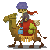
「物販交流会」が解放。情報交換と偉人との出会い
取引トラブルが30%減る
評価が上がりやすく、トラブルが少し減る
楽市楽座の精神。販売手数料-3%、仕入れ候補+1

トラブル対応の判定が大幅に有利になる
やる気が下がる出来事を半分の確率で受け流す
取引トラブル-10%
基礎能力「交渉」+3（レベルごと）
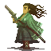
取引トラブル半減、交渉判定+20%
経験を売る。毎月安定した収入。ただし炎上しやすい
取引トラブル-5%（レベルごと）
経営 — 極めると称号「経営者」
数字を読む。KPI・税金・事業化
仕入れ・出品の画面に「手数料と送料を引いた見込み利益」が出る
月末の支払いを先読みして現金を回す。カードの利用枠+30万円、税額-5%
経営画面に利益率・回転日数・滞留在庫が出る
獲得する経験点+4%（レベルごと）
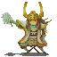
帳簿が完璧。確定申告の税額-30%、カード払いがリボにならない
経営画面にROI・時間単価・90日超在庫・損切り率が出る
獲得する経験点+10%
税額-3%（レベルごと）
税額-15%、カードの利用枠+100万円、獲得する経験点+10%
せどりで掴んだ売れ筋をもとにOEM商品を作る。毎月、評価に応じた利益
正道・商社 — 極めると称号「総合商社」
徳を積んで、信用で大きくなる。TOKUが高くないと取れない
取引トラブル-10%、買い手+5%
メーカーの正規代理店に。買い手+10%、高めでも売れやすい
カードの利用枠+200万円、税額-5%
月額費用-15%、獲得する経験点+10%
店舗・電脳の仕入れ候補+2
評価が下がりにくく、毎月の事業収入+50万円
物販の総合商社へ。毎月の事業収入+150万円、買い手+20%
魔道 — 極めると称号「裏社会の帝王」
利益だけを追う裏の道。安く強いが、引き返せない
抽選の当選率1.5倍、電脳の仕入れ候補+2。TOKU-15
行列の成功率が大きく上がり、店舗の仕入れ候補+2。TOKU-15
抽選の当選率さらに1.5倍。TOKU-15
毎月の裏の収入+30万円。偽物の手がかりを気にしなくなる。TOKU-15
中古の仕入れ値-30%。TOKU-15
裏の人間になる（TOKUのゲージが消える）。裏市場の売値がさらに上がり、毎月の裏の収入+100万円
不調パネル（ツリーには出ない）
イベントで付くマイナスの効果。経験点を払うと治せます。腱鞘炎・腰痛・寝不足は外出「通院・治療」でも治せます（体調不良：内科3,000円・腱鞘炎：整形外科6,000円・腰痛：整骨院8,000円・寝不足：睡眠外来5,000円）。
| 不調 | 効果 | 治すコスト |
|---|---|---|
| 楽観主義 | 相場を1割高く見積もってしまう | 精神 30 |
| 腱鞘炎 | 発送の体力消費が1.5倍 | 行動 20 精神 20 |
| 腰痛 | 店舗巡りの体力消費が1.3倍 | 行動 30 精神 20 |
| 寝不足 | 休んでも体力が戻りにくい | 精神 30 |
| 炎上体質 | 炎上度が上がりやすい | 精神 20 |
キャリア：ステージ・志・キャリアパス・暮らし
副業から専業、法人化、事業化へ。顧客層が育つとキャリアの誘いが来て、会社になったら「志」を掲げる。
5つのステージ
昇格の判定は月末。HUDの「目標」に、いまの条件と進み具合が出ます。ステージが上がると、増えた行動・メニューがまとめて表示されます。
副業スタート 目安 0〜1年目
家の不用品を売って、仕入れ→販売の流れをつかむ
できるようになること 1週に行動1回。バイトができる
副業安定 目安 1〜3年目
ジャンルと販路を広げ、専業にできるか見極める
できるようになること 夜の行動（週1回・体力+5）。資格講座・寄付・中国輸入。ライバル・業界の動き・暮らし・キャリアのメニュー
専業 目安 3〜5年目
バイトを辞めて専業に。外注とツールで仕組み化を始める
できるようになること 行動が週2回（バイトは消える）。毎月の生活費。外注・業者オークション・百貨店。顧客層からのキャリアの誘い
法人化・拡大 目安 5〜8年目
会社にして外注・倉庫・問屋仕入れで規模を広げる
できるようになること 税金が法人税に。毎月の社会保険。問屋取引・物流倉庫・自分の店・スタッフ。志を選ぶ。仮想通貨（現金1,000万円以上）
事業化・多角化 目安 8〜10年目
せどりを通過点に、自社ブランド・買取・発信へ
できるようになること 自社ブランド・買取事業・情報発信。事業売却の打診（直近12か月の純利益1,000万円以上）
ステージ3（専業）の条件は「3か月で90万円」だけじゃなく赤字の月なし。大きな在庫を抱えた月に赤字を出すと、判定が先に延びるわ。法人化も「純利益」で見るから、売上ではなく手残りを意識して。
6年目からは年齢の壁で、毎年体力の最大値が4ずつ下がります（下限60）。自分で動く量を減らす「仕組み化」が効いてきます。
志（ステージ4〜）
法人化したあとの週のはじめに、坂本龍馬に「この会社で何を成し遂げたいか」を聞かれます。志ごとに3段の目標があり、3つとも達成すれば志のエンディング、1〜2つなら「志半ばEND」。志は年に一度（48週ごと）変えられます。
総合商社見届け人：坂本龍馬
正道ルートを極め、信用で大きくなる。TOKUが高くないと進めない
- 正道のパネルを3枚
- パネル「業界の信頼」
- パネル「総合商社」
配信の女王見届け人：楊貴妃
ライブコマースで「この人から買いたい」と思われる存在になる
- フォロワー3,000人
- 1回の配信で売上50万円
- フォロワー1万人
目利きの館見届け人：葛飾北斎
鑑定士として、真贋と価値を見極める館を開く
- 鑑定100件
- 鑑定士としての信用90
- 委託販売の取り分 累計300万円
私設美術館見届け人：マリー・アントワネット
売らずに集める。図鑑を完成させ、人を招く美術館をつくる
- コレクション18点
- 美術館を開き、シリーズを3つそろえる
- コレクション54点
物販王見届け人：織田信長
純資産で天下を取る。ライバル転売屋をすべて抜き去る
- 純資産5,000万円
- 純資産1億円
- 長者番付でライバル全員を抜く
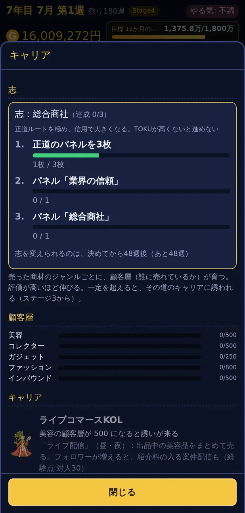
顧客層とキャリアパス（ステージ3〜）
商品を売るたびに、その商品の顧客層（美容・ガジェット・コレクター・ファッション・インバウンド）が育ちます（評価が高いほど伸びる）。一定を超えると偉人が「その道」に誘い、受けると専用の行動が開きます。行動は余りがちな経験点を使います。
ライブコマースKOL楊貴妃が誘う
顧客層「美容」が500を超えると誘いが来る（ステージ3〜）
1回に使う経験点：
鑑定士葛飾北斎が誘う
顧客層「コレクター」が500を超えると誘いが来る（ステージ3〜）
1回に使う経験点：情報 20 精神 10
レビューメディアトーマス・エジソンが誘う
顧客層「ガジェット」が250を超えると誘いが来る（ステージ3〜）
1回に使う経験点：情報 30
セレクトショップクレオパトラが誘う
顧客層「ファッション」が800を超えると誘いが来る（ステージ3〜）
1回に使う経験点：技術 25
インバウンド・越境ECマルコ・ポーロが誘う
顧客層「インバウンド」が500を超えると誘いが来る（ステージ3〜）
1回に使う経験点：
資格講座（ステージ2〜）
外出「資格講座に通う」で受講料を払い、何回か通うと資格が取れます。行動・精神の経験点が多めに入るのも利点。
| 講座 | 効果 | 受講料 | 回数 | 時期 |
|---|---|---|---|---|
| 酒類販売業免許 | 通信販売酒類小売業免許。お酒（サケ・ネクタール）を継続して出品できる | 30,000円 | 4回 | ステージ2〜 |
| 簿記3級 | 経営画面の指標が1段増え、税額-3% | 10,000円 | 3回 | ステージ2〜 |
| 時計の目利き講座 | 時計の推定相場の誤差-20%、偽物の細部チェック+1か所 | 20,000円 | 3回 | ステージ2〜 |
| ジュエリーの目利き講座 | ジュエリーの推定相場の誤差-20%、偽物の細部チェック+1か所 | 20,000円 | 3回 | ステージ2〜 |
| 楽器の目利き講座 | 楽器の推定相場の誤差-20%、偽物の細部チェック+1か所 | 20,000円 | 3回 | ステージ2〜 |
| スニーカーの目利き講座 | スニーカーの推定相場の誤差-20%、偽物の細部チェック+1か所 | 20,000円 | 3回 | ステージ2〜 |
| トレカの目利き講座 | トレカの推定相場の誤差-20%、偽物の細部チェック+1か所 | 20,000円 | 3回 | ステージ2〜 |
| フィギュアの目利き講座 | フィギュアの推定相場の誤差-20%、偽物の細部チェック+1か所 | 20,000円 | 3回 | ステージ2〜 |
| アート・美術品の基礎講座 | アート・美術品のジャンルを仕入れられるようになる | 40,000円 | 3回 | ステージ3〜 |
| レトロゲーム・PCの基礎講座 | レトロゲーム・PCのジャンルを仕入れられるようになる | 40,000円 | 3回 | ステージ3〜 |
| アンティークの基礎講座 | アンティークのジャンルを仕入れられるようになる | 40,000円 | 3回 | ステージ3〜 |
| ブランド小物の基礎講座 | ブランド小物のジャンルを仕入れられるようになる | 40,000円 | 3回 | ステージ3〜 |
| 輸出入の基礎 | 海外の販路「海外EC」が使える。円安の週は高く売れる | 50,000円 | 4回 | ステージ3〜 |
| 貿易実務 | 輸出規制のあとも、海外ECで限定品を売れる | 60,000円 | 4回 | ステージ3〜（輸出規制のあと） |
| 店舗経営講座 | 自分の店を開ける（外出「店を開く」） | 100,000円 | 5回 | ステージ4〜 |
暮らし（生活水準）
稼げるようになると、次の暮らしへの誘いが来ます。上げると体力・やる気に効きますが、毎月の出費が積み上がり、下げるとやる気-2（24週は上げられない）。
| Lv | 暮らし | 誘いの条件 | 毎月の出費 | 効果 |
|---|---|---|---|---|
| 0 | 実家の延長のワンルーム | 最初 | — | |
| 1 | 1LDKに引っ越す | 直近3か月の平均純利益 30万円 | +80,000円/月 | 毎週の体力の回復 +3 |
| 2 | 車を買う | 直近3か月の平均純利益 80万円 | +120,000円/月 | 店舗巡りの移動時間 -40%、店舗せどり・業者オークション・問屋の体力 -15%、置き場 +20 |
| 3 | 家事代行を頼む | 直近3か月の平均純利益 150万円 | +150,000円/月 | 毎週の体力の回復 +5、やる気が下がりにくい |
| 4 | タワーマンションに住む | 直近3か月の平均純利益 400万円 | +400,000円/月 | 毎月やる気 +1、上の階の住人との付き合い（対人 +20/月） |
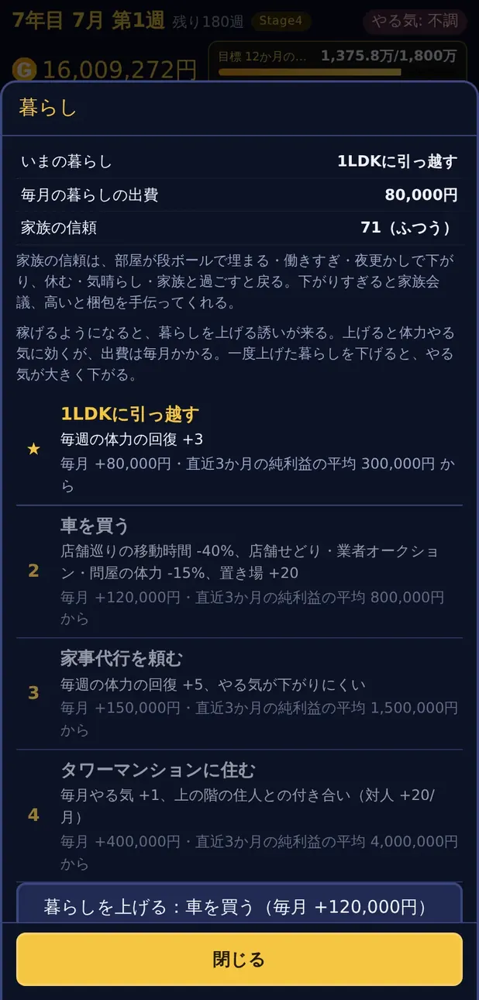
自分の店（ステージ4〜）
資格「店舗経営講座」を取ると、外出「店を開く」で立地を選んで出店できます（保証金は家賃3か月）。出品していない在庫が店頭に並び、毎週お客さんが来て買っていきます（手数料・送料なし）。改装・スタッフ（月250,000円）・買取カウンターで強化。
| 立地 | 家賃 | 客足 | 値付けの許容 | 特徴 |
|---|---|---|---|---|
| 駅前 | 400,000円/月 | 60 | ×1.03 | 客足が多い。通勤客は新品の定番・話題の品を買う |
| 商店街 | 200,000円/月 | 35 | ×1.08 | 地元のコレクターが通う。中古・コレクター品が強い |
| 郊外ロードサイド | 120,000円/月 | 25 | ×1 | 家賃が安い。車で来るファミリーが季節品や大物を買う |
| 観光地 | 350,000円/月 | 50 | ×1.12 | 季節で客足が波打つ。インバウンドは高額品に強い |
スタッフ（ステージ4〜）
求人に応募が来ると、梱包・発送を任せるスタッフを雇えます。経験者（月64,000円）と未経験の学生（月44,000円）。未経験は最初ミスが多いですが、育ちます。
百貨店とコレクション（ステージ3〜）
外出「百貨店で買い物」で自分のための買い物をすると、年間の購入額で外商のランクが上がり、品薄の限定品を定価で案内してもらえるようになります。美術画廊ではコレクション（全60点・コモン／アンコモン／レア／エピック／レジェンド）を集められ、シリーズをそろえると+5万円の評価。ステージ4で500万円の私設美術館を開くと入館料が入ります（維持費 月15万円）。コレクションは評価額で純資産に入ります。
| 外商のランク | 年間の購入額 | 特典 |
|---|---|---|
| 一般 | — | |
| 会員 | 年間 100万円 | 催事の先行案内（限定スイーツなどを定価で） |
| 外商顧客 | 年間 500万円 | 外商の担当がつき、品薄の限定品を定価で優先案内（年に数回） |
| 特選顧客 | 年間 2,000万円 | 正規店の高級時計・宝飾品の購入枠と、招待制の催事 |
仮想通貨（ステージ4〜）
現金が1,000万円を超えると、サトシが「余剰資金での投資」として戻ってきます。受けるとメニュー「仮想通貨」でいつでも売買（行動は使わない）。断ると二度と来ません（精神+60・TOKU+5）。毎週2%でバブルか暴落が起きます。最後に資産の半分以上が仮想通貨の儲けなら「結局クリプトEND」。
| 銘柄 | ティッカー | 特徴 |
|---|---|---|
| ステーブル円 | JPYS | 円と同じ値を保つコイン。年に4%ほどの利息がつく |
| ナカモトコイン | NKM | 最初の仮想通貨。値動きは大きいが、長い目で見ると上がってきた |
| $SAOコイン | SAO | クリスが借金を背負った因縁のコイン。一晩で何倍にも、何分の一にもなる |
事業売却（イグジット）
ステージ5で直近12か月の純利益が1,000万円以上あると、ファンドから事業買収の打診が来ることがあります（最終年を除く）。買値は年間利益×残り年数の9割（最大3年分）。売ればその場でゲームが終わりイグジットEND。遅くなるほど安くなります。
仲間（偉人）：出会い方と奥義
20人の偉人それぞれに3段階の出会いがあり、最後にスキルの「コツ」や特別な「奥義」を授けてくれる。
偉人は、特定の行動をしたときや週のはじめに、確率で現れます。出会いは3段階で、段階が進むほど条件が厳しくなります。メニュー「仲間」で、何人に出会い、何段階まで進んだかを確認できます（まだ会っていない人は「？？？」）。
伊能忠敬足で稼ぐ測量家
- 店舗せどり中（40%）
- 2回目：8週目以降
- 3回目：18週目以降・仕入れ40以上
平賀源内江戸のコピーライター
- 撮影・出品作業中（45%）
- 2回目：6週目以降
- 3回目：出品45以上
一休とんちの和尚
- 取引トラブルを1件経験した週のはじめ
- 2回目：トラブル4件
- 3回目：トラブル10件
石田三成帳簿の鬼
- 図書館で勉強中（40%）
- 2回目：28週目以降
- 3回目：60週目以降
ニュートンバブルで大損した天才
- 物販交流会で（50%）
- 2回目：カエルキッズのブームか暴落中
- 3回目：80週目以降
織田信長楽市楽座の覇王
- 物販交流会で・16週目以降、評価60以上か粗利30万円以上
- 2回目：24週目以降
- 3回目：ステージ3以上
マルコ・ポーロ東方の相場を知る男
- 電脳せどり中・6週目以降
- 2回目：撮影・出品作業中（ステージ2・海外未経験）
- 3回目：海外ECで5点売る
マルクス公園の経済学者
- 気晴らし中（40%）
- 2回目：12週目以降
- 3回目：96週目以降
サトシ・ナカモト謎のクリプト仙人
- 週のはじめ・14週目以降・現金5万円以上
- 2回目：32週目以降・現金10万円以上
- 3回目：120週目以降
石川五右衛門出所不明の卸業者
- 電脳せどり中・10週目以降
- 2回目：40週目以降
- 3回目：70週目以降
ノストラダムス相場大予言サロン主宰
- 図書館で勉強中・5週目以降
- 2回目：30週目以降
- 3回目：100週目以降
坂本龍馬海援隊（日本初の商社）
- 物販交流会で・24週目以降
- 2回目：ステージ3以上
- 3回目：ステージ4以上
福沢諭吉一万円の人
- 図書館で勉強中（25%）
- 2回目：24週目以降
- 3回目：借金を完済したあと
トーマス・エジソン発明王
- 撮影・出品作業中・ステージ2以上
- 2回目：累計150点販売
- 3回目：ステージ3・出品50以上
徳川家康規制の番人（鳴くまで待とう）
- 休む・20週目以降
- 2回目：12週以上持っているコレクター品・高級品・限定品が3つ
- 3回目：150週目以降・ステージ3
レオナルド・ダ・ビンチ万能の目利き
- 店舗せどり中・16週目以降・古物商許可
- 2回目：目利き45以上
- 3回目：目利き65以上
ナポレオン・ボナパルト兵站の皇帝
- 撮影・出品作業中・在庫25点以上
- 2回目：累計200点販売
- 3回目：ステージ3・梱包50以上
ナイチンゲール統計と看護の天使
- 休む・10週目以降・体力50未満
- 2回目：通院・治療で
- 3回目：100週目以降
ベンジャミン・フランクリン時は金なりの人
- 図書館で勉強中・12週目以降
- 2回目：40週目以降
- 3回目：専業になったあと
ダーウィン変化に適応する博物学者
- 電脳せどり中・24週目以降
- 2回目：規制が1つ以上入ったあと
- 3回目：180週目以降
奥義のコツは同じ人に何度か会うほどLvが上がって、スキルツリーで安く取れるようになるわ。伊能忠敬に会いたいなら店舗せどり、平賀源内なら撮影・出品作業を続けるのが近道ね。
そのほかの人たち
サンタクロース12月の依頼人
12月の第2〜4週、「冬の甘えんぼ王子ウィンター」か「フォトングラス」を持っていると現れ、定価で譲ってほしいと頼まれる。譲るとやる気+2・炎上度-15、そして「まっとうな商人END」への道が開く。
徳川家康規制の番人
休むと会える仲間でもあり、規制の時代の語り部でもある。奥義は持っている品の相場を上げる。
師匠先代の転売屋
2周目以降、前の周のクリスが師匠になる。外出「師匠に相談」（12週に1回）で、いちばん伸ばした能力の経験点と、歩んだルートにちなんだ助言がもらえる。
世界の動き：ライバル・規制・年表・季節
稼ぐほど目立ち、対策が入り、ライバルが乗り込んでくる。いたちごっこの10年。
ライバル転売屋（ゴースト・偉人）
ステージ3から1人ずつ、金に取り憑かれた偉人の亡霊が乗り込んできます。毎月の長者番付（純資産）で競い、抜くと対人+30・精神+30。4人とも抜くと実績「番付の上へ」。
ゴースト・曹操店舗の買い占め・ステージ3〜
「この街の棚は、すべて余のものよ。ワゴンの奥まで、根こそぎな」
ゴースト・エジソン転売ボット・ステージ3〜
「1%のひらめきと、99%のボットだよ。在庫復活？ 君がF5を押す前に、私のボットが買っている」
ゴースト・ゴッホアート・競り・ステージ4〜
「業者オークションで、君が札を入れた品…私も欲しいんだ。いくらでも出すよ」
ゴースト・ビリー・ザ・キッド価格破壊・ステージ4〜
「同じ品を、お前より1割安く並べてやる。早撃ち勝負だ」
規制と対策（いたちごっこ）
稼いでいる商材・販路ほど目立ち度が溜まり、100を超えると対策が予告され、8週後に施行されます。高値で売る（定価の1.5倍超）ほど目立ちます。予告の間に売り切るのが鉄則。
| 対策 | 内容 | マインの助言 |
|---|---|---|
| 公式リセールの開始 | フリマ（プンシー・アマクリ）では「対象の品」を定価の1.5倍までしか出品できない オークション・海外EC・自分の店は対象外 | ミィームのオークションや海外EC、自分の店なら対象外よ。公式リセールで定価で譲れば、徳も積めるわ。 |
| 不正転売禁止の対象拡大 | どの販路でも「対象の品」は定価の1.2倍までしか出品できない 出品中の高値の出品は、施行の日に値下げされる | 新品の限定品で稼ぐ時代は終わりね。中古やコレクター品なら規制の外よ。 |
| 受注生産化 | 「対象の品」は品薄でなくなり、相場が定価近くまで下がっていく 持っている在庫は早めに売り切ろう | 品薄が売りの商品は、受注生産になったら終わり。予告の間に売り切るのが鉄則よ。 |
| 抽選の本人確認 | 名義借り・捨てアカでの応募ができなくなる 抽選の当選率 ×0.7 公式ストアで買うほど「会員ランク」が上がり、当選しやすくなる | 公式ストアの予約や当選品をちゃんと買って、会員ランクを育てましょう。正面から行くしかないわ。 |
| 購入制限（お一人様1点） | 行列の戦利品は1回1個まで 行列の成功率 ×0.8（会員証の確認で列が進まない） 数年で形骸化して緩むかも | 行列は効率が落ちるわね。中古・コレクター品や、開拓した仕入れ先に目を向けて。 |
| フリマの手数料改定 | プンシーの手数料 +3% | ミィーム、アマクリ、海外EC、自分の店…。販路をひとつに頼らないことね。 |
| 輸出規制 | 海外ECで限定品（新作）を売るには、資格「貿易実務」が必要 資格講座で取れる | 資格講座の「貿易実務」を取れば、また海外に出せるわ。 |
| 認定中古市場の開設 商機 | 中古品の相場 ×1.15（2年間） | 規制のあとには、新しい商機があるものよ。中古の仕入れを増やすなら今ね。 |
業界の年表（5年目〜）
5年目から毎年、業界の大事件が1つ起きます。年の初めにノストラダムスが予告し、春に始まり、年末にミッションの結果が出ます。事件はあなたの稼ぎ方に関係するものが選ばれやすくなります。
| 事件 | 予告 | その年のミッション |
|---|---|---|
| 転売対策元年 | 大手メーカーが一斉に転売対策に乗り出す年になるでしょう。抽選も行列も、今までどおりとはいきません | 規制の年も、年間の純利益を去年の8割以上に保つ |
| せどり四天王の上京 | 地方で名を上げた転売屋たちが、あなたの街に乗り込んでくるでしょう | 今年、新しい仕入れ先を開拓するか、独占契約を結ぶ |
| ライブコマースバブル | 配信で物が売れる年になるでしょう。美容の品は、画面の向こうで飛ぶように売れます | 今年、美容の品を40点売る |
| 円安ショック | 円が大きく売られる年になるでしょう。海外に売る人には追い風、海外から買う人には向かい風です | 今年、海外ECで20点売る |
| フリマ大手の上場 | フリマ大手が上場する年になるでしょう。株主のために、手数料は上がります | 今年の売上の半分以上を、プンシー以外の販路で |
| 訪日客ブーム | 海外からのお客さまが過去最高になる年でしょう。和の品が見直されます | 今年、和雑貨・工芸を40点売る |
| アートバブル | 美術品と骨董の値が跳ねる年になるでしょう。持っている人は笑い、これから集める人は泣きます | 今年、コレクションを5点増やす |
季節
- 12月は年末商戦：買い手1.25倍・トラブル1.3倍。年明け第1週は発送ラッシュで体力-10
- 季節商品：雛人形（3月）・諏訪法性兜（5月）・ウィズダムネックレス（母の日）・エリートギョク（お中元）・ブレイブヨロイ（ハロウィン）など。シーズン後は値崩れするが、海外ECなら定価近くで売れることも
- ステージには季節の演出（春の花びら・夏の光・秋の葉・冬の雪）と、夜の行動では夜の色
期間限定フェア（現実の日付）
現実のカレンダーに合わせて、期間限定の商品が店と通販に並びます（チュートリアル後）。
暮らしのパラメータ
体力と体調
行動後の体力が25を切るような重い行動は体調不良の危険（行動カードに⚠）。体調を崩すと2週間は休むか通院しかできず、発送も遅れる。毎週+6回復（置き場が満杯だと+3）。体力30未満は疲れて相場の見立てがぶれ、偽物の手がかりを1つ見落とす。
家族の信頼
初期70（0〜100）。部屋が段ボールで埋まる（-3）・働きすぎ（体力25未満で-2）で下がり、何もなければ毎週+1。30以下になると家族会議（向き合えば+25）。80以上だと家族が梱包を手伝ってくれることも（体力+10）。100で10年を終えると実績「家族の応援」。
炎上度
品薄品の買い占め・高値の転売・違法行為で上がる。40以上でSNSで名指しされ、50以上で炎上イベント、80以上でアカウント警告。60以上で終えると称号「炎上系セラー」。
評価
初期50。取引が終わるたびに少しずつ上がり（即レスでさらに）、発送遅れ・トラブルで下がる。買い手の人数に直結する。
正道と魔道：TOKUと裏社会
TOKU（徳）が高ければ正道・商社へ、低ければ魔道へ。0になれば裏の人間に。戻る道は「蜘蛛の糸」だけ。
TOKU（徳）
基準100（0〜200）。日々の活動への影響は小さいですが、キャリアの分かれ道になります。寄付・地域の手伝い（ステージ2〜）、サンタの頼みを聞く、出所不明品を断る、仮想通貨を断るなどで上がり、魔道のパネル・違法行為で下がります。
正道・商社ルート
TOKU110以上から。公正な取引→正規代理店・事業の信用→従業員の育成・メーカー直取引→業界の信頼→総合商社（TOKU170・毎月+150万円）。志「総合商社」の土台。
魔道ルート
TOKU80未満で取れる。転売ボット・並び屋・名義の大量取得・偽物の卸・盗品の買い取り。安く強いが、取るたびにTOKU-15。到達点「裏社会の帝王」でTOKU-100＝裏の人間に。
裏の人間
TOKUが0になると裏の人間になり、TOKUのゲージが消えます。表の販路はアカウント凍結（出品は取り下げ）、裏市場（仲介料20%・表の数倍の値）でしか売れません。毎月の暮らしは35万円。報復（在庫を奪われ2週動けない）や、まれに襲撃（週0.6%）があり、襲撃されると「闇に消えるEND」です。
蜘蛛の糸
裏の人間になって24週以上たつと、一休が「地獄にも一本だけ蜘蛛の糸が垂れておる」と現れます（毎週20%）。糸をつかむと財産・在庫・スキルツリー・法人・店をすべて失い、基礎能力だけが残った状態で、TOKU50・保護観察（表の販路の手数料が高い）から再出発。そのまま10年を終えると「蜘蛛の糸END」。
違法行為と逮捕
- チケットを定価の5倍で売る（50%で書類送検・罰金30万円。逃れても前歴が残る）
- 出所不明品（石川五右衛門）を買う → 2週後に警察が来て没収・前歴
- 前歴がある状態で、もう一度出所不明品を買うと逮捕 → 御用END
- 確定申告をしないと、あとで追徴課税されることも
魔道は序盤から強力だけど、ランクは純資産で決まるから捕まったら終わり。裏社会の帝王ENDを狙うなら、ほかのエンディングとは別の周で。
エンディング全集：全19種
10年後の最終査定。純資産でランクが決まり、歩んだ道でエンディングが決まる。条件と判定の順番をすべて公開。
最終査定
480週目を終える（またはゲームオーバーになる）と最終査定。純資産＝現金＋入金待ちの売上金＋ポイント＋在庫の評価額（相場の7割・偽物と盗品は0）＋コレクションの評価額＋仮想通貨の時価 −借金 −カードの未払い。査定は順番に演出され（文 → 純資産のカウントアップ → ランクのはんこ）、10年の純利益のグラフと名場面（初めて売れた日・ステージが上がった日・完済・いちばん儲かった取引・いちばん稼いだ月）が並びます。
ランク
御用・債務整理・闇に消えるENDは、純資産にかかわらずランクGです。
エンディングの判定の順番
通常のエンディング（13種）
御用END
違法行為の前歴があるのに、もう一度出所不明品を買う（その時点でゲーム終了）
二度目の過ちは見逃されなかった。
「知らなかった」「みんなやってる」――取調室で繰り返した言葉は、誰にも届かなかった。
やってはいけない商売は、やってはいけない。
債務整理END
月末の最低返済を3か月連続で滞納する（その時点でゲーム終了）
3度目の滞納。弁護士に相談し、債務整理の手続きをすることになった。
部屋に残ったのは、売れ残った段ボールの山。
「……次は、ちゃんと働こう」
イグジットEND
ステージ5で事業買収の打診を受け、売却する（その時点でゲーム終了）
育てた事業を、ファンドに売った。契約書にサインした手は、少しだけ震えていた。
借金まみれで段ボールを積んでいた部屋は、もうない。
「次は何をしよう」――時間は、自分のものになった。
結局クリプトEND
借金を返し終え、仮想通貨の儲けが純資産の半分以上
10年が経った。資産の半分くらいは、仮想通貨の爆益だった。
「転売で地道に稼いだ日々って、何だったんだろう」
マインは何も言わず、そっとチャートアプリを削除した。
事業家END
借金を返し終え、ステージ5で10年を終える
せどりは通過点だった。
仕入れで掴んだ「売れる理由」をもとに自社ブランドを立ち上げ、買い取る側・教える側にも回った。
10年前、押し入れの本を1冊売った日のことを、クリスは今も覚えている。
物販会社社長END
借金を返し終え、ステージ4で10年を終える
合同会社クリス物販は、外注と倉庫で回る会社になった。
「転売ヤー」と呼ばれた男は、いつしか「物販会社の社長」と呼ばれていた。
次の一手は、せどりの外にあるのかもしれない。
専業せどらーEND
借金を返し終え、ステージ3（専業）で10年を終える
10年間、仕入れて、売って、また仕入れた。
自由だけど不自由。当たりの日はハイで、外れの日は眠れない。
「店を回るだけ」の毎日に、そろそろ体がついてこなくなってきた。
まっとうな商人END
借金を返し終え、ステージ3以下で、サンタの頼みを聞いたことがあり、炎上度25未満
限定品の転売からは少しずつ手を引いた。
ワゴンの掘り出し物、絶版本、地方で手に入らない品。「必要な人に届ける」商いを続けている。
儲けは減った。でも、取引メッセージの「ありがとう」は増えた。
副業せどらーEND
借金を返し終え、ステージ1〜2で10年を終える
本業のかたわら、週末だけ仕入れて売る。
大きくは稼げなかったけれど、借金は返し終えた。
押し入れは、いつの間にか空っぽになっていた。
闇に消えるEND
裏の人間でいる間に、襲撃にあう（毎週0.6%。その時点でゲーム終了）
恨みは、金では消えなかった。
ある夜を境に、クリスの部屋の明かりは二度とつかなかった。
残された段ボールの中身が何だったのか、知る者はいない。
裏社会の帝王END
裏の人間のまま10年を終える
10年、裏の道を走り切った。
表の人間が一生かかっても稼げない金を、クリスは数年で動かした。
ただ、夜道で背後を振り返る癖だけは、最後まで抜けなかった。
蜘蛛の糸END
裏の人間になったあと、蜘蛛の糸をつかんで足を洗い、10年を終える
一度は闇に堕ちた。すべてを捨てて、糸をつかんだ。
押し入れの本を1冊売るところから、もう一度やり直した。
「ありがとう」の取引メッセージが、こんなに重いとは知らなかった。
返済はつづくよEND
10年を終えた時点で、借金が残っている
10年が経った。借金はまだ残っている。
売れると思った物が売れ残り、計算ミスで赤字を出し、それでも毎月の返済だけは続けてきた。
「来月も、店を回るか」
志のエンディング（6種）
総合商社END
志「総合商社」の3つの目標をすべて達成（志のエンディングは、事業家・物販会社社長・専業・まっとうな商人・副業 の代わりに出る）
合同会社クリス物販は、メーカーの正規代理店を束ねる商社になった。
「転売ヤー」と呼ばれた男の名刺には、いま「代表取締役社長」とある。
龍馬は笑った。「海援隊の続きを、おまんがやってくれたぜよ」
配信の女王END
志「配信の女王」の3つの目標をすべて達成（志のエンディングは、事業家・物販会社社長・専業・まっとうな商人・副業 の代わりに出る）
スマホ1台で始めた配信は、毎晩1万人が集まる番組になった。
「クリスさんが勧めるなら」――その一言で、品物が売り切れる。
楊貴妃は言った。「美しさは、伝える人がいて初めて届くのよ」
目利きの館END
志「目利きの館」の3つの目標をすべて達成（志のエンディングは、事業家・物販会社社長・専業・まっとうな商人・副業 の代わりに出る）
「クリス鑑定館」には、今日も古い品が持ち込まれる。
本物には正しい値を、偽物には正直な言葉を。
北斎は筆を置いた。「おぬしの眼は、もう誰にも曇らせられんな」
私設美術館END
志「私設美術館」の3つの目標をすべて達成（志のエンディングは、事業家・物販会社社長・専業・まっとうな商人・副業 の代わりに出る）
転売で稼いだお金は、売らない品に変わった。
「クリス美術館」の展示室には、10年かけて集めた品が並ぶ。
マリーは目を細めた。「お金は、使い方で品が出ますのね」
物販王END
志「物販王」の3つの目標をすべて達成（志のエンディングは、事業家・物販会社社長・専業・まっとうな商人・副業 の代わりに出る）
長者番付の一番上に、クリスの名前があった。
亡霊たちは、もう誰も追いついてこない。
信長は言った。「天下を取ったな。……次は、何を取る？」
志半ばEND
志を掲げ、目標の1〜2つまで達成した
志を掲げて走った5年だった。
目標の○つまでは届いた。残りは、まだ先にある。
「10年じゃ足りなかったな。……でも、まだ終わりじゃない」
称号
査定に出る称号は、上から順に最初に当てはまったものです。
| 称号 | 条件 |
|---|---|
| 裏社会の帝王 | 裏の人間 |
| 炎上系セラー | 炎上度60以上 |
| 店舗の鬼 | 「店舗せどり」のパネルを4枚以上（いちばん伸ばしたルート） |
| 電脳の覇者 | 「電脳・ポイ活」のパネルを4枚以上（いちばん伸ばしたルート） |
| 鑑定士 | 「古物・目利き」のパネルを4枚以上（いちばん伸ばしたルート） |
| 売れっ子セラー | 「販路・出品」のパネルを4枚以上（いちばん伸ばしたルート） |
| 物販会社 | 「仕組み化」のパネルを4枚以上（いちばん伸ばしたルート） |
| 業界の顔 | 「人脈・発信」のパネルを4枚以上（いちばん伸ばしたルート） |
| 経営者 | 「経営」のパネルを4枚以上（いちばん伸ばしたルート） |
| 総合商社 | 「正道・商社」のパネルを4枚以上（いちばん伸ばしたルート） |
| 裏社会の帝王 | 「魔道」のパネルを4枚以上（いちばん伸ばしたルート） |
| トラブルバスター | 取引トラブルを10件以上 |
| 買い占めの帝王 | 品薄品を12個以上確保 |
| ワゴンの魔術師 | いちばん儲かった取引が「定番」の品 |
| 限定品ハンター | いちばん儲かった取引が「限定」の品 |
| 古物の目利き | いちばん儲かった取引が「コレクター」の品 |
| バブルの申し子 | いちばん儲かった取引が「ブーム」の品 |
| 正規店マラソンランナー | いちばん儲かった取引が「高級」の品 |
| 季節商戦の仕掛け人 | いちばん儲かった取引が「季節」の品 |
| 催事の早起き番長 | いちばん儲かった取引が「生もの」の品 |
| 断捨離の達人 | いちばん儲かった取引が「家の不用品」の品 |
| くじの箱買い職人 | いちばん儲かった取引が「くじ」の品 |
| 見習いせどらー | まだ何も売っていない |
実績：全24種
10年（またはゲームオーバー）の最後に判定され、この端末に記録される。タイトルの「実績」から確認できる。
「10年を終える」系の実績は、事業売却（イグジット）での引退も含むわ。「価格差だけで」（品薄品を一度も買わない）と「整理券の向こう」（品薄品を定価で確保）は同じ周では取れないから、周回で狙ってね。
周回要素：引き継ぎ・キャリアの型・師匠・チャレンジ
10年を終えるたびに、次の周が少し有利に、そして少し違う遊び方に。
到達点の引き継ぎ
これまでの周でたどり着いたルートの到達点（キャップストーン）から、次の周に1つを最初から持って始められる。
師匠
前の周のクリスが「師匠」になる（新しい順に3人まで記録）。12週に1回、外出「師匠に相談」で経験点と助言。
キャリアの型（2周目〜）
ふつう：得意も苦手もない、まっさらな転売屋
商材特化：1つのジャンルの専門家。相場の見立てと真贋が鋭く、専門の仕入れ先から品が回ってくる。専門外は見立てがぶれる
組織型：最初から人を使って規模を取る。並び屋の成功率+30%、仕入れ候補+2、仕入れの体力-30%。そのかわり毎月の人件費（1.5万円×ステージ）、炎上しやすさ1.5倍、毎月6%で複数アカウントの規約違反が見つかり2週間の出品停止
商材特化で選べるジャンル：スニーカー・トレカ・時計・フィギュア。組織型の人件費は月1.5万円×ステージ。
チャレンジ
今日のチャレンジ：日付で決まるシード。同じ日に遊ぶ人は同じ相場・同じ出来事から。
今週のチャレンジ：週ごとのシードで、結果をオンラインランキングに登録できる（難易度ふつう・引き継ぎなし）。
この端末のランキングと実績にも記録される。
攻略チャート：Sランクとエンディングの狙い方
おすすめの伸ばし方、時期ごとの目標、エンディング別の作戦。
おすすめの10年（ふつう・Sランク狙い）
- 利益計算（情報10）と近所の店のワゴン（行動10）を最優先。月5万円×2か月でステージ2
- 能力は目利きと出品を「自動で割り振る」で底上げ
- 月末の最低返済分は必ず残す
- 電脳せどり・抽選・相場チェック。夜は電脳せどりか出品作業
- ミィーム → アマクリ（月4,900円）。出品枠の拡張
- 赤字の月を出さずに3か月で90万円 → 専業（行動2回）。借金はこの頃に完済しておくと楽（実績「3年で完済」）
- 古物商許可 → 業者オークション（毎月第3週）。第3週に現金を厚く
- 外注（梱包・発送 → 撮影・出品）で体力を仕入れに回す。価格改定ツール
- ライバルに荒らされたら新しい仕入れ先へ。独占契約も
- 12か月で800万円 → 法人化
- 問屋取引・物流倉庫・外注：リサーチ・仕入れ（12か月で1,800万円＋外注3種でステージ5）
- 志を決める。自分の店・スタッフ
- 6年目からの年齢の壁に備え、自分で動かなくても回る形に
- 自社ブランド・買取事業・情報発信で毎月の事業収入
- 最後の数か月は在庫を売り切るより現金化を意識（在庫は相場の7割でしか評価されない）
- 純資産5,000万円でS
エンディング別の作戦
| エンディング | 作戦 |
|---|---|
| 事業家END | ステージ5まで上げる。外注3種（撮影・出品／梱包・発送／リサーチ・仕入れ）と12か月1,800万円を同時に満たす。志を決めると志のENDに置きかわるので、純粋に狙うなら志は「まだ決めない」 |
| 志のEND | 法人化の直後に志を決める。総合商社はTOKUを高く保つ、配信の女王・目利きの館はキャリアが必要、私設美術館はコレクションとお金、物販王は純資産1億とライバル4人 |
| まっとうな商人END | ステージ3以下で止め（専業や法人化の誘いを断る）、12月にサンタへ定価で譲り、炎上度を25未満に保つ |
| 専業せどらーEND | ステージ3で止める（法人化の誘いを断る） |
| 副業せどらーEND | 借金だけ返して、専業の誘いを断る |
| 結局クリプトEND | ステージ4で現金1,000万円を持ってサトシの誘いを受け、バブルで当てる |
| イグジットEND | ステージ5で直近12か月1,000万円以上を保ち、打診が来たら売る（早いほど高い） |
| 裏社会の帝王END | 魔道パネルでTOKUを下げ、裏の人間のまま10年を走り切る（襲撃に注意） |
| 蜘蛛の糸END | 裏の人間になって24週後、一休の蜘蛛の糸をつかむ |
| 返済はつづくよEND | 借金を残したまま10年（狙うなら返済だけは続ける） |
ランクを上げる近道は、荒れていない仕入れ先と体力の使い方よ。荒れ具合が高いルートは仕入れ値が上がるし、体力切れの発送遅れは評価を下げて、売れる数そのものを減らすわ。
商品図鑑：全88種
ゲームに登場するすべての商品。定価・サイズ・種類。仕入れ値と相場は毎週動く。
相場は商品ごとに「定価に対する倍率」として毎週動きます。メニューの「相場」で、持っている品の上がり下がりと全商品の推定相場を確認できます（スキル「相場チェック」）。
家の不用品（5種）
最初に家にある物と、「家の中を探す」で見つかる物。仕入れ値0円
ハット参考 2,400円定番（34種）
定番品。相場が安定していて、ワゴンや値札ミスで安く仕入れて差額を取る。シリーズ物は毎年世代交代し、旧世代は値崩れする
ブーツ定価 12,000円懐中時計定価 26,000円コレクター・中古（17種）
中古・絶版本・アンティークなど。古物商許可がいるものが多く、真贋の見極めが大事。持ち続けると相場が上がることも
大唐西域記参考 58,000円限定（品薄になりやすい）（6種）
発売日に品薄になる限定品。抽選・予約・行列で定価で確保すれば大きな差額。規制と再販に注意
季節（9種）
季節の商戦の品。シーズン前に仕入れ、シーズン中に売り切る
生もの（1種）
賞味期限がある。期限が切れると廃棄
ブーム（1種）
ブームで急騰し、天井のあと暴落する。ニュートンの「群衆の狂気」で天井を察知
高級品（2種）
高級時計・美術品。正規店や外商、業者オークションで。1つで数十万〜数百万の利益
くじの景品（7種）
くじの景品。A賞とラストワン賞は高値、下位賞はダブつく
期間限定フェア（6種）
現実の日付に合わせた期間限定フェアの品
用語集とQ&A
転売・物販の専門用語（全49語）と、よくある質問。ゲーム内でも、セリフの色つきの言葉をタップすると解説が出る。
用語集
| 用語 | 意味 |
|---|---|
| せどり | 安く仕入れた品を、相場との差で売って利益を出す商売。店で探すのが店舗せどり、ネットで探すのが電脳せどり |
| 転売ヤー | 品薄の人気商品を買い占めて高値で売る人を指す、批判的な呼び方 |
| 転売 | 買った品を、自分で使わずに売ること。品物によっては法律で禁止・制限されている |
| 相場 | その品が、いまだいたいいくらで売り買いされているかという値段の目安 |
| 売れた値段 | フリマで実際に売れた（売り切れた）出品の値段。出品中の値段より、本当の相場に近い |
| 定価 | メーカーや店が決めた、ふつうの販売価格 |
| プレ値 | プレミア価格。品薄で、定価より高く取引されている値段 |
| 品薄 | 欲しい人に対して、売っている数が足りない状態。相場が上がりやすい |
| 手数料 | フリマやECで売れたときに、売上から差し引かれるお金 |
| 送料 | 売れた品を買い手に送るためのお金。出品者が払うことが多い |
| 利益 | 売値から、仕入れ値・手数料・送料などを引いて手元に残るお金 |
| 粗利 | 売上から仕入れ値だけを引いたもうけ。送料や手数料はまだ引いていない |
| 在庫 | 仕入れて、まだ売れていない品。持っているだけでお金と場所を使う |
| 損切り | 値下がりした品を、損を承知で早めに売ること。お金を眠らせないため |
| 即決買取 | 買取業者が、その場ですぐに買い取ってくれること。早いが相場より安い |
| 型落ち | 新しいモデルが出て、古くなったモデル。値下がりしやすい |
| ワゴン | 店の入口などに置かれる、値引き品をまとめたかご。掘り出し物がある |
| 値札ミス | 店がつけ間違えた安い値札。気づいた人だけが安く買える |
| 抽選 | 人気の限定品を、応募した人の中から選んで売る方式 |
| 再販 | メーカーが同じ品をもう一度作って売ること。決まると相場が下がりやすい |
| 値下げ交渉 | フリマで、買い手がコメントで値下げをお願いすること |
| 受取評価 | 買い手が品を受け取ったことを知らせる評価。これで取引が完了し、売上金が入る |
| すり替え | 買い手が、届いた本物を偽物や壊れた品と入れ替えて「不良品だった」と返品してくる詐欺 |
| ノークレーム・ノーリターン | 「返品・苦情は受けない」という出品者の宣言。フリマの規約では、これだけで返品を断れるとは限らない |
| 古物商許可 | 中古品を仕入れて売る商売に必要な、警察（公安委員会）の許可 |
| 薬機法 | 医薬品・化粧品・医療機器などのルールを決めた法律。医薬品や高度管理医療機器（カラコンなど）は許可なく売れない。化粧品は認められた範囲を超える効能を、サプリ（健康食品）は病気に効くなどの効能をうたえない |
| 不正転売禁止法 | チケット不正転売禁止法。転売禁止と明記され、買った人の名前を確認している公演・スポーツのチケットを、商売として定価を超えて転売することを禁じる。1年以下の拘禁刑か100万円以下の罰金（または両方） |
| 確定申告 | 1年の所得と税金を計算して、税務署に届け出ること。会社員なら副業の所得が年20万円を超えると必要。専業なら所得が基礎控除を超えると必要。20万円以下でも住民税の申告はいる |
| 追徴課税 | 申告が少なかったとわかったときに、あとから払う税金 |
| リボ払い | カードの支払いを毎月一定額にする払い方。残高に高い手数料がかかり続ける |
| 外注 | 作業（撮影・出品・梱包・発送など）を、お金を払って人に任せること |
| 検品 | 届いた品に傷や不良がないか確かめること |
| 関税 | 海外から品を輸入するときにかかる税金 |
| 為替 | 円と外国のお金の交換比率。円安だと輸入は高く、輸出は有利になる |
| 円安 | 円の価値が下がること。海外に売ると多くの円が入り、海外から買うと高くつく |
| 業者オークション | 古物商の許可を持つ業者だけが参加できる、品物の競り市 |
| 問屋 | メーカーから品をまとめて仕入れ、店に卸す業者 |
| 卸値 | 問屋などが、店に売るときの値段。定価より安い |
| 掛け率 | 卸値が定価の何割かを表す数字。掛け率60%なら、定価1万円の品を6,000円で仕入れられる |
| 最低ロット | 一度に注文しなければならない最低の数 |
| 鑑定 | 品物が本物か偽物かを、専門家が確かめること |
| サーチ済み | トレカのパックの重さなどを測って、当たりを抜いた残りのこと |
| ジャンク | 動くかどうか確かめていない、または壊れている品。安いが、使えるかは運しだい |
| 買い占め | 品薄の品を大量に買って、ほかの人が買えないようにすること。強い批判を受ける |
| ステマ | ステルスマーケティング。広告なのに、広告であることを隠して宣伝すること。2023年10月から景品表示法で規制されている（責任を問われるのは広告を出した会社） |
| 商標法 | ブランドのロゴや名前を守る法律。偽物と知って売ると、フリマでも買取店でも違反になる |
| 炎上 | SNSなどで多くの人から批判が集まること |
| 専業 | ほかの仕事をせず、物販だけで生活すること |
| 法人化 | 個人の商売を会社にすること。利益が大きくなると税金で有利になることがある |
Q&A
Q. 売れません
値付けが相場の1.1倍を超えていないか確認。評価が低い・出品枠が少ない・その販路の買い手が少ないことも。「撮影・出品作業」で売れ行きが上がり、12月は買い手が増える。
Q. 現金が足りない
即決買取（相場の45%）で現金化、日雇いバイト（2.2万円）、カード払い（翌月以降）。ただしカードの使いすぎはリボ地獄の入口。
Q. 体調を崩した
2週間は休むか通院のみ。ナイチンゲールに会うと体調不良の確率が半分になる奥義をもらえる。体力の残りを見て、⚠の付いた行動を避ける。
Q. 仕入れ値が上がった
そのルートが荒れている。メニュー「業界の動き」で荒れ具合を確認し、別のルートや開拓した仕入れ先に移るか、独占契約を結ぶ。
Q. 経験点が偏る
能力画面の「経験点の振り替え」（半分の値で移す）か、キャリアの行動・資格講座で余った経験点を使う。
Q. セーブは？
行動のたび・アプリを切り替えたときに自動。データはこのブラウザの中にあるので、ブラウザのデータを消すと消える。
Q. 英語で遊べる？
タイトルの「Play in English」で英語版に切りかわる（セーブはそのまま）。
Q. 何週で何年？
1か月＝4週、1年＝48週（4月第1週〜翌年3月第4週）、10年＝480週。